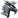
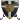

IL FERRO SPEZZATO - QUEST NECRO Norgroth sfere
Norgroth, la città nota come il Cuore Nero dell'Impero Necromundo, sorge a qualche ora di viaggio dalla capitale e si specchia sul vasto lago cremesi. Questa cittadella è famosa per ospitare la Gilda commerciale che fornisce gran parte delle armi e degli oggetti che sono destinati ai combattenti ed ai maghi di Necromunda. Non si tratta di una vasta città fortificata, ma di un reticolo di vie che sfociano in una grande piazza centrale. Al centro di questa, sorge il palazzo della Gilda. Si tratta di un edificio particolare che ha otto entrate, una per ogni lato dell'ottagono che traccia il suo perimetro. Ogni porta ha sopra di se una scritta che permette l'ingresso in uno specifico settore della gilda. La delegazione di Necromunda è stata accolta nella porta della Spada. Le ampie ante in Larice, che profumano di resina e tempesta, vi hanno aperto la via ad un corridoio dalle mura fredde e fin troppo neutre, prive di orpelli, quadri o abbellimenti. Vi ha accolto Thormen Calfer il Capo della gilda commerciale. Dopo un primo approccio molto ossequiale, vi ha condotto in una stanza rettangolare, piuttosto ampia, con un grosso tavolo in legno di Noce, che sembra avere più vene e tempo del mondo intero. Ci sono sedute per tutti. Frutta di stagione dispensata in vassoi d'argento ogni tre posti. Coppe d'argento, bottiglie di vino, caraffe d'acqua. Differentemente dall'arredo sobrio, austero ed essenziale, la gilda non sembra aver badato a spese per accogliere la delegazione. "Bevenuti a Norgroth" dice Thormen Calfer, volgendo lo sguardo ai presenti. "E' spiacevole accogliervi in giorni così nefasti per l'impero e per la nostra città. La gilda non ha mai mancato una consegna nella sua intera esistenza e non sapete quanto mi imbarazzi avervi dovuto convocare qui per porre chiarezza sulla questione." Inspira con forza. "Come immagino saprete, gli artefatti che periodicamente consegnamo alle vostre gilde, vengono prodotti secondo antica arte nelle forge di Ivarheim, il vecchio monastero sulle colline di Norgroth, unico luogo in cui viene lavorato l'Ombrascoria, l'elemento magico che compone le vostre spade, i vostri amuleti, ogni oggetto che può portare vanto alle vostre gilde." Inspira con forza, l'uomo alto e snello, con due baffi pronunciati e curati. Ha occhi piccoli ed azzurri, capelli oramai sbiancati dal tempo, lunghi, lisci e racchiusi in una lunga coda che raggiunge la base della schiena. Indossa una tounica beige che raggiunge le caviglie, sandali di buona pelle, bracciali in argento con rubini rossi. Una grossa collana che scivola fino allo sterno e porta otto simboli: una spada, uno scudo, un arco, un amuleto, un anello, il pettorale di un'armatura, una coppia di guanti incrociati ed infine una moneta di rame. "Sono qui per rispondere ad ogni vostro dubbio o perplessità, ma se davvero cercate delle risposte, temo sarà necessario accertarsi delle condizioni del Monastero e capire perché non arrivano più armi dai monaci di Ivarheim" China il capo Thormen, quindi si accomoda, facendo cenno con le mani ad i vari servitori presenti di servire vino, acqua o cibo, a chiunque lo voglia.
//Turni liberi. Nella vostra prima azione descrivete gli oggetti che portate con voi e la posizione dei vostri png. In particolare Euridas, che ha con se i Draghi.
21:06 Euridas
Euridas  [Norgroth - Stanza] [Si trova di fronte a Calfer. Indossa l'armatura del Drago Nero, ad eccezione dell'elmo, che ha sotto il braccio destro, appena rimosso dal proprio capo. I lunghi capelli bianchi cadono sia dietro sia dinanzi le spalle, nell'incavo tra braccia e fianchi. Mano sinistra che poggia sul pomo di Argon Dur. I Draghi entrati al suo seguito si sono posti sei alla sua destra, sei alla sua sinistra, due dietro di lui, ai margini della stanza, a lui di spalle, con lo sguardo rivolto verso la porta.] Kaos Lex. [Il tono di voce e' fermo, formale, lo sguardo serio ma privo di ostilita'. Uno sguardo verso i servitori che si attivano, scuotendo il capo verso uno di loro, come a volergli far comprendere di non aver bisogno di nulla, con cortesia, per poi tornare su Thormen Calfer] Da quanto tempo non avete piu' notizie di cio' che accade al monastero?
[Norgroth - Stanza] [Si trova di fronte a Calfer. Indossa l'armatura del Drago Nero, ad eccezione dell'elmo, che ha sotto il braccio destro, appena rimosso dal proprio capo. I lunghi capelli bianchi cadono sia dietro sia dinanzi le spalle, nell'incavo tra braccia e fianchi. Mano sinistra che poggia sul pomo di Argon Dur. I Draghi entrati al suo seguito si sono posti sei alla sua destra, sei alla sua sinistra, due dietro di lui, ai margini della stanza, a lui di spalle, con lo sguardo rivolto verso la porta.] Kaos Lex. [Il tono di voce e' fermo, formale, lo sguardo serio ma privo di ostilita'. Uno sguardo verso i servitori che si attivano, scuotendo il capo verso uno di loro, come a volergli far comprendere di non aver bisogno di nulla, con cortesia, per poi tornare su Thormen Calfer] Da quanto tempo non avete piu' notizie di cio' che accade al monastero?
Euridas [Norgroth - Stanza] [Si trova di fronte a Calfer. Indossa l'armatura del Drago Nero, ad eccezione dell'elmo, che ha sotto il braccio destro, appena rimosso dal proprio capo. I lunghi capelli bianchi cadono sia dietro sia dinanzi le spalle, nell'incavo tra braccia e fianchi. Mano sinistra che poggia sul pomo di Argon Dur. I Draghi entrati al suo seguito si sono posti sei alla sua destra, sei alla sua sinistra, due dietro di lui, ai margini della stanza, a lui di spalle, con lo sguardo rivolto verso la porta.] Kaos Lex. [Il tono di voce e' fermo, formale, lo sguardo serio ma privo di ostilita'. Uno sguardo verso i servitori che si attivano, scuotendo il capo verso uno di loro, come a volergli far comprendere di non aver bisogno di nulla, con cortesia, per poi tornare su Thormen Calfer] Da quanto tempo non avete piu' notizie di cio' che accade al monastero?21:07 Urwen [Norgroth - Stanza ] L’elfa sita dietro al Drago Nero, armata fino alle ossa, indossa pantaloni neri, una camicia nascosta dalla corazza a placche, stivali placcati, un pugnale all’interno dello stivale destro, Fauci è al sinistro fianco, protetta da un fodero e sorretta alla cinta, qualche anello tra le mani seppur riparate dai guanti ed un ciondolo nascosto dalla corazza, elmo in testa che le copre la bionda chioma, unica cosa visibile della paladina sono le orecchie a punta e il chiaro viso, occhi nerissimi come la pece osservano tutto ciò che la circonda, sfruttando le proprie capacità razziali, lì all’interno della stanza rettangolare nella quale è stata accolta ed ulteriormente accompagnata, occhi che scrutano minuziosamente, e la tavolata particolarmente abbellita per l’occasione. Un cenno vien donato alla volta di Thormen Califer, limitandosi per ora a stare in silenzio ed a ascoltare attentamente ogni parola che vien detta, lasciando che sia il Drago Nero a parlare.
21:11 SiannaLeFair
SiannaLeFair  [Norgroth - Stanza] L’abito nero, lungo e perfettamente aderente, realizzato in un tessuto lucido avvolge la sua figura esile seguendo curve appena accennate e scoprendo, con calcolo perfetto, parte del petto e delle scapole. Sulla fronte, la mezzaluna scarnificata rovesciata scintilla. Dai lembi dell’abito emergono, come sigilli pulsanti, i glifi scorrono dal petto fino alle mani. Sul suo orecchio sinistro, una goccia d’oro pende lieve. La mano sinistra, invece, è stretta attorno al puntale oscuro la cui estremità è montata da un piccolo cranio opalescente che custodisce il veleno di Vestral, le dita sottili adornate dagli anelli degli ordini che serve e asservito nei secoli all’interno dell’impero Albino. Sopra l’abito indossa un manto cremisi, di fattura pregevole, bordato d’oro antico. Sotto di esso si intravede una piccola tascapane di pelle, nascosta con cura, al cui interno riposano due ampolle sigillate, alcune monete e il suo compendio alchemico. Davanti a lei, Thormen Calfer va parlando loro delle difficoltà che si sono presentate con gli approvvigionamenti provenienti dal monastero di Ivarheim. Quando Euridas tace, ella muove un passo in avanti. “Diteci, messere Calfer” sussurra, carezzevole nella voce, “non vi sono forse notizie dei venerabili monaci di Ivarheim?”. (Percezione acuta naturale: mente 9)
[Norgroth - Stanza] L’abito nero, lungo e perfettamente aderente, realizzato in un tessuto lucido avvolge la sua figura esile seguendo curve appena accennate e scoprendo, con calcolo perfetto, parte del petto e delle scapole. Sulla fronte, la mezzaluna scarnificata rovesciata scintilla. Dai lembi dell’abito emergono, come sigilli pulsanti, i glifi scorrono dal petto fino alle mani. Sul suo orecchio sinistro, una goccia d’oro pende lieve. La mano sinistra, invece, è stretta attorno al puntale oscuro la cui estremità è montata da un piccolo cranio opalescente che custodisce il veleno di Vestral, le dita sottili adornate dagli anelli degli ordini che serve e asservito nei secoli all’interno dell’impero Albino. Sopra l’abito indossa un manto cremisi, di fattura pregevole, bordato d’oro antico. Sotto di esso si intravede una piccola tascapane di pelle, nascosta con cura, al cui interno riposano due ampolle sigillate, alcune monete e il suo compendio alchemico. Davanti a lei, Thormen Calfer va parlando loro delle difficoltà che si sono presentate con gli approvvigionamenti provenienti dal monastero di Ivarheim. Quando Euridas tace, ella muove un passo in avanti. “Diteci, messere Calfer” sussurra, carezzevole nella voce, “non vi sono forse notizie dei venerabili monaci di Ivarheim?”. (Percezione acuta naturale: mente 9)
SiannaLeFair [Norgroth - Stanza] L’abito nero, lungo e perfettamente aderente, realizzato in un tessuto lucido avvolge la sua figura esile seguendo curve appena accennate e scoprendo, con calcolo perfetto, parte del petto e delle scapole. Sulla fronte, la mezzaluna scarnificata rovesciata scintilla. Dai lembi dell’abito emergono, come sigilli pulsanti, i glifi scorrono dal petto fino alle mani. Sul suo orecchio sinistro, una goccia d’oro pende lieve. La mano sinistra, invece, è stretta attorno al puntale oscuro la cui estremità è montata da un piccolo cranio opalescente che custodisce il veleno di Vestral, le dita sottili adornate dagli anelli degli ordini che serve e asservito nei secoli all’interno dell’impero Albino. Sopra l’abito indossa un manto cremisi, di fattura pregevole, bordato d’oro antico. Sotto di esso si intravede una piccola tascapane di pelle, nascosta con cura, al cui interno riposano due ampolle sigillate, alcune monete e il suo compendio alchemico. Davanti a lei, Thormen Calfer va parlando loro delle difficoltà che si sono presentate con gli approvvigionamenti provenienti dal monastero di Ivarheim. Quando Euridas tace, ella muove un passo in avanti. “Diteci, messere Calfer” sussurra, carezzevole nella voce, “non vi sono forse notizie dei venerabili monaci di Ivarheim?”. (Percezione acuta naturale: mente 9)21:18 Lenian
Lenian  [Norgroth - Stanza ] Il Druido Oscuro siede nella seduta assegnatagli, vicino a quella della Fenice Nera. Indossa una tunica dalle semplici fatture, la cui cappa gli copre l’intero volto. Dal collo, pende l’inseparabile collana di ossa, realizzata dalle falangi sottratte alle sue prede mortali. Le scivola lungo il petto, ondeggiando a destra e a manca, assecondando le movenze della creatura. Il vistoso manto scarlatto dell’Ordine della Fenice è adagiato sulle esili spalle} … {La sua attenzione è rivolta al Capo della gilda commerciale. Nell’ascoltare le sue parole, la mano sinistra si sposta per un attimo lungo i fianchi, come a voler constatare lo stato delle protezioni in cuoio, che indossa al di sotto della tunica a difesa del busto e delle gambe, e la presenza della sacca appesa alla cinta, contenente alcune ampolle dall’ignoto contenuto. La destra impugna uno scettro dalle forme serpeggianti, che adagia composto sulle cosce. Nel riportare l’attenzione all’interloquire dei presenti, abbassa la cappa, mostrando il suo volto emaciato e segnato dal tempo. Per il momento, rimane in silenzio, scambiandosi occhiate con la Consorella più anziana, nell’udire la sua domanda}
[Norgroth - Stanza ] Il Druido Oscuro siede nella seduta assegnatagli, vicino a quella della Fenice Nera. Indossa una tunica dalle semplici fatture, la cui cappa gli copre l’intero volto. Dal collo, pende l’inseparabile collana di ossa, realizzata dalle falangi sottratte alle sue prede mortali. Le scivola lungo il petto, ondeggiando a destra e a manca, assecondando le movenze della creatura. Il vistoso manto scarlatto dell’Ordine della Fenice è adagiato sulle esili spalle} … {La sua attenzione è rivolta al Capo della gilda commerciale. Nell’ascoltare le sue parole, la mano sinistra si sposta per un attimo lungo i fianchi, come a voler constatare lo stato delle protezioni in cuoio, che indossa al di sotto della tunica a difesa del busto e delle gambe, e la presenza della sacca appesa alla cinta, contenente alcune ampolle dall’ignoto contenuto. La destra impugna uno scettro dalle forme serpeggianti, che adagia composto sulle cosce. Nel riportare l’attenzione all’interloquire dei presenti, abbassa la cappa, mostrando il suo volto emaciato e segnato dal tempo. Per il momento, rimane in silenzio, scambiandosi occhiate con la Consorella più anziana, nell’udire la sua domanda}
Lenian [Norgroth - Stanza ] Il Druido Oscuro siede nella seduta assegnatagli, vicino a quella della Fenice Nera. Indossa una tunica dalle semplici fatture, la cui cappa gli copre l’intero volto. Dal collo, pende l’inseparabile collana di ossa, realizzata dalle falangi sottratte alle sue prede mortali. Le scivola lungo il petto, ondeggiando a destra e a manca, assecondando le movenze della creatura. Il vistoso manto scarlatto dell’Ordine della Fenice è adagiato sulle esili spalle} … {La sua attenzione è rivolta al Capo della gilda commerciale. Nell’ascoltare le sue parole, la mano sinistra si sposta per un attimo lungo i fianchi, come a voler constatare lo stato delle protezioni in cuoio, che indossa al di sotto della tunica a difesa del busto e delle gambe, e la presenza della sacca appesa alla cinta, contenente alcune ampolle dall’ignoto contenuto. La destra impugna uno scettro dalle forme serpeggianti, che adagia composto sulle cosce. Nel riportare l’attenzione all’interloquire dei presenti, abbassa la cappa, mostrando il suo volto emaciato e segnato dal tempo. Per il momento, rimane in silenzio, scambiandosi occhiate con la Consorella più anziana, nell’udire la sua domanda}21:19 Mihawk [Norgroth - Stanza] è un po' defilato dal gruppo, ma abbastanza vicino per sentire prima Thormen Calfer e poi gli altri che pongono domande. Non guarda nessuno in particolare, quasi di spalle nei loro confronti e del tavolone ricco di cibo e bevande. Osserva la stanza, attentamente, sembra che stia cercando qualcosa in particolare. Il Cavaliere è avvolto da una corazza di acciaio nero, incisa con venature cremisi che pulsano come vene vive, simboli contorti e rune che serpeggiano in quel vessillo di terrore. Un armatura che non è solo protezione, è una tavola sacra di storie e giuramenti infrangibili. La spada riposa nella guaina fissata dietro la schiena, l’elsa emerge sopra la spalla sinistra come un sigillo sacro. E’ InvernoRosso, un frammento della volontà del Primo, pronta ad essere destata con un solo gesto. La testa è libera da metalli e costrizioni, lunghi capelli corvini gli ricadono disordinati sul volto, nascondendo in parte lo sguardo rosso che brilla con intensità ardente. La runa marchiata spicca al centro della fronte, segno evidente di un patto profano. Il volto, scavato e ombroso, è scolpito in una calma inquietante. L’elmo riposa sotto l’ascella, sorretto dal bicipite, è una corona con corna monumentali che si protendono verso il soffitto. Dalla gorgiera penzola una collana con un amuleto a forma di drago argentato: la coda è avvolta in modo sinuoso e il corpo circonda la pietra centrale a protezione, questa a tratti sembra pulsare nel corso della conversazione.
21:24 Izayoi
Izayoi  [Norgroth - Stanza] [È immobile all’interno della grande sala rettangolare, ha preso posto in una delle sedute al tavolo, al fianco opposto di Lenian, sulla quale rimane seduta con estrema compostezza, la schiena ben dritta che non va a contatto con lo schienale, le gambe unite su cui sono posate sopra ambedue le mani. Ha lunghissimi capelli neri raccolti in una treccia che ricade sulla pallida schiena sulla quale si adagia il manto della Fenice, nel suo colore rosso e oro. Il suo corpo è coperto da una semplice maglia nera a collo alto e maniche lunghe e un paio di pantaloni in pelle neri, che fasciano le esili gambe. Al collo ha Destino, il suo ciondolo di rubino, celato dalla stoffa nera della casacca, mentre su fianchi dispone di una cintura in pelle nera con diverse scarselle, una per i componenti dei propri incantesimi, il pugnale d’oro nel suo fodero, e altri alloggiamenti che custodiscono ciascuno delle pozioni, nello specifico una panacea, una cura mutismo e due pozioni energia. Ha lasciato sul cavallo le altre pozioni che aveva con sé. Le sue mani presentano i soliti anelli, il sigillo della setta all’anulare sinistro, l’anello di diamanti all’anulare destro e il ben più modesto anello dell’energia al mignolo destro. Lo sguardo di smeraldo dell’elfa, nel suo taglio tipicamente a mandorla, si sofferma alcuni istanti sulla tavola imbandita, pur senza prendervi nulla. Ascolta in silenzio e immobile le parole dell’uomo che osserva con un’attenzione pressoché totale, come se oltre a ciò che già manifesta, sembrasse cercare di sondarne l’animo stesso, ogni possibile forma di menzogna. Rimane a lungo in silenzio, udendo le domande rivolte all’uomo, poi la sua voce si eleva leggera] Mi piace immaginare abbiate mandato qualcuno dei vostri a controllare, prima di scomodare l’Impero. [Inarca un sopracciglio] Che cos’è accaduto, dunque?
[Norgroth - Stanza] [È immobile all’interno della grande sala rettangolare, ha preso posto in una delle sedute al tavolo, al fianco opposto di Lenian, sulla quale rimane seduta con estrema compostezza, la schiena ben dritta che non va a contatto con lo schienale, le gambe unite su cui sono posate sopra ambedue le mani. Ha lunghissimi capelli neri raccolti in una treccia che ricade sulla pallida schiena sulla quale si adagia il manto della Fenice, nel suo colore rosso e oro. Il suo corpo è coperto da una semplice maglia nera a collo alto e maniche lunghe e un paio di pantaloni in pelle neri, che fasciano le esili gambe. Al collo ha Destino, il suo ciondolo di rubino, celato dalla stoffa nera della casacca, mentre su fianchi dispone di una cintura in pelle nera con diverse scarselle, una per i componenti dei propri incantesimi, il pugnale d’oro nel suo fodero, e altri alloggiamenti che custodiscono ciascuno delle pozioni, nello specifico una panacea, una cura mutismo e due pozioni energia. Ha lasciato sul cavallo le altre pozioni che aveva con sé. Le sue mani presentano i soliti anelli, il sigillo della setta all’anulare sinistro, l’anello di diamanti all’anulare destro e il ben più modesto anello dell’energia al mignolo destro. Lo sguardo di smeraldo dell’elfa, nel suo taglio tipicamente a mandorla, si sofferma alcuni istanti sulla tavola imbandita, pur senza prendervi nulla. Ascolta in silenzio e immobile le parole dell’uomo che osserva con un’attenzione pressoché totale, come se oltre a ciò che già manifesta, sembrasse cercare di sondarne l’animo stesso, ogni possibile forma di menzogna. Rimane a lungo in silenzio, udendo le domande rivolte all’uomo, poi la sua voce si eleva leggera] Mi piace immaginare abbiate mandato qualcuno dei vostri a controllare, prima di scomodare l’Impero. [Inarca un sopracciglio] Che cos’è accaduto, dunque?
Izayoi [Norgroth - Stanza] [È immobile all’interno della grande sala rettangolare, ha preso posto in una delle sedute al tavolo, al fianco opposto di Lenian, sulla quale rimane seduta con estrema compostezza, la schiena ben dritta che non va a contatto con lo schienale, le gambe unite su cui sono posate sopra ambedue le mani. Ha lunghissimi capelli neri raccolti in una treccia che ricade sulla pallida schiena sulla quale si adagia il manto della Fenice, nel suo colore rosso e oro. Il suo corpo è coperto da una semplice maglia nera a collo alto e maniche lunghe e un paio di pantaloni in pelle neri, che fasciano le esili gambe. Al collo ha Destino, il suo ciondolo di rubino, celato dalla stoffa nera della casacca, mentre su fianchi dispone di una cintura in pelle nera con diverse scarselle, una per i componenti dei propri incantesimi, il pugnale d’oro nel suo fodero, e altri alloggiamenti che custodiscono ciascuno delle pozioni, nello specifico una panacea, una cura mutismo e due pozioni energia. Ha lasciato sul cavallo le altre pozioni che aveva con sé. Le sue mani presentano i soliti anelli, il sigillo della setta all’anulare sinistro, l’anello di diamanti all’anulare destro e il ben più modesto anello dell’energia al mignolo destro. Lo sguardo di smeraldo dell’elfa, nel suo taglio tipicamente a mandorla, si sofferma alcuni istanti sulla tavola imbandita, pur senza prendervi nulla. Ascolta in silenzio e immobile le parole dell’uomo che osserva con un’attenzione pressoché totale, come se oltre a ciò che già manifesta, sembrasse cercare di sondarne l’animo stesso, ogni possibile forma di menzogna. Rimane a lungo in silenzio, udendo le domande rivolte all’uomo, poi la sua voce si eleva leggera] Mi piace immaginare abbiate mandato qualcuno dei vostri a controllare, prima di scomodare l’Impero. [Inarca un sopracciglio] Che cos’è accaduto, dunque? 21:31Kiol
Kiol 
[Norgoth – stanza] [Indossa l’armatura dell’Armata, con due draghi al centro che guardano rispettivamente a destra e a sinistra. Il capo e il volto sono liberi dall’elmo tenuto sotto braccio sul lato sinistro. Sul fianco destro è legata la spada che è riposta nel fodero. Stivali scuri ai piedi. E’ dietro Euridas, e osserva l’uomo di fronte a loro che parla. Solo un’occhiata svelta agli altri con lui nella stanza. Le mani protette dai guanti sostengono una l’elmo sul lato sinistro e l’altra è lasciata lungo il fianco ]I numerosi servitori, vestiti di abiti del tutto simili a quelli di Thormen, si barcamenano per servire con eleganza e con attenzione i vari presenti al tavolo. Sono persone comuni, ligi al loro mestiere. Thormen si volge ad Euridas e, alla sua domanda, massaggia con il pollice e l'indice della mano destra uno dei due profondi baffi, pensieroso. "In realtà noi non abbiamo mai notizie di ciò che accade al Monastero." Gli dice, inspirando con forza. "Generalmente dimeziamo i nostri ricavi con i monaci, loro forgiano, noi vendiamo, ma sono artigiani molto riservati ed ancora più riservate sono le loro formule." Sospira greve il capo della Gilda, distendendo le spalle. Quindi completa parte del suo racconto approfittando della domanda di Sianna. "I nostri uomini lasciano i carri all'esterno del Monastero, i monaci li riempiono e quindi siamo pronti a spedirli per dove c'è necessità." Scuote il capo con fare particolarmente contrariato Thormen. "Non è mai tardato un ordine, poi, da un mese circa, il materiale è cominciato a scarseggaire, fino ad esaurirsi. Chi è andato a controllare..." Volgendosi a Izayoi. "...Non è più tornato." Risponde abbassando gli angoli delle labbra. "Non pensavo di scomodarvi invero. Credevo aveste interesse nella faccenda." Ribatte, acuto. Thormen sembra trasmettere, nel tono della voce, nei modi di fare, un moto di sicurezza, almeno nel suo settore. E' preoccupato, ma la sua preoccupazione, pare del tutto attinente agli affari o comunque ai rapporti con Necromunda. La stanza dove siete ospitati ha due finestre che danno sulla piazza, grandi e composte da mosaici colorati.
Turni liberi
21:41Euridas [Norgroth - Stanza] Andremo a controllare, dunque. [Resta in piedi l'elfo, muovendo il passo in direzione di una delle finestre con passo lento, misurato. Lo sguardo volge verso il paesaggio esterno, piu' precisamente alla ricerca degli altri draghi rimasti all'esterno dell'edificio, qualora fossero visibili da quella posizione. Resta nella medesima postura precedente. Mano sinistra sul pomo della spada, destra che tiene l'elmo sotto il braccio.] Quindi prima di interrompersi, i rifornimenti sono diminuiti. [Un'affermazione piu' tra se e se, ma comunque udibile, prima che l'elfo torni a voltarsi verso il proprio interlocutore.] Quanti uomini si sono recati li' senza fare ritorno?
Euridas [Norgroth - Stanza] Andremo a controllare, dunque. [Resta in piedi l'elfo, muovendo il passo in direzione di una delle finestre con passo lento, misurato. Lo sguardo volge verso il paesaggio esterno, piu' precisamente alla ricerca degli altri draghi rimasti all'esterno dell'edificio, qualora fossero visibili da quella posizione. Resta nella medesima postura precedente. Mano sinistra sul pomo della spada, destra che tiene l'elmo sotto il braccio.] Quindi prima di interrompersi, i rifornimenti sono diminuiti. [Un'affermazione piu' tra se e se, ma comunque udibile, prima che l'elfo torni a voltarsi verso il proprio interlocutore.] Quanti uomini si sono recati li' senza fare ritorno?21:42 Urwen [Norgroth - Stanza ] è lì immota dietro al Drago Nero e quindi anche all’eroe, al quale da un rapido cenno del capo. Sfrutta le capacità razziali per scorgere ogni eventuale minimo rumore o qualcosa che possa ostacolare quel momento tanto allertata per quanto cercherebbe di richiamare la propria concentrazione. Quello dell’elfa è uno sguardo molto austero, imperativo, privo di ogni emozione, scuote il capo minuziosamente alle risposte che sente da Thormen Califer. In piedi dunque, la mancina mano viene poggiata sull’elsa senza dar a vedere alcun movimento minatorio, qualche rapido cenno del capo in segno di dissenso ad un servo che prepara qualche porzione da mangiare per la paladina, che successivamente si limita ad avvicinarsi lentamente all’Eroe, non appena il Drago Nero si muove verso una delle finestre.
21:46Lenian [Norgroth - Stanza] {Diritto sulla seduta, composto, continua ad ascoltare in silenzio lo scambio di informazioni tra il Capo gilda e gli altri. Anche da lontano, le sue sembianze appaiono chiaramente non di questo mondo. Una pelle ritratta, increspata dall’assenza di liquidi nel corpo, adorna gli occhi vitrei, dalle iridi opacizzate. Un lungo e crespo crine albino, nasconde parzialmente le rune e simboli arcani scarnificati sulla fronte e ai lati del viso} … {all’avvicinarsi di uno dei servitori, alza la mano, manifestando la volontà di non voler alcuna pietanza offertagli} Diteci messere, quanto dista esattamente il Monastero da qui? {Educato nei modi, quanto inquietante nella sua figura, sembra voler intenzionalmente precedere le parole della Banshee, dopo la domanda del Drago Nero. La voce fuoriesce fluida, un registro leggero, dal timbro leggermente roco}
Lenian [Norgroth - Stanza] {Diritto sulla seduta, composto, continua ad ascoltare in silenzio lo scambio di informazioni tra il Capo gilda e gli altri. Anche da lontano, le sue sembianze appaiono chiaramente non di questo mondo. Una pelle ritratta, increspata dall’assenza di liquidi nel corpo, adorna gli occhi vitrei, dalle iridi opacizzate. Un lungo e crespo crine albino, nasconde parzialmente le rune e simboli arcani scarnificati sulla fronte e ai lati del viso} … {all’avvicinarsi di uno dei servitori, alza la mano, manifestando la volontà di non voler alcuna pietanza offertagli} Diteci messere, quanto dista esattamente il Monastero da qui? {Educato nei modi, quanto inquietante nella sua figura, sembra voler intenzionalmente precedere le parole della Banshee, dopo la domanda del Drago Nero. La voce fuoriesce fluida, un registro leggero, dal timbro leggermente roco}21:47SiannaLeFair [Norgroth - Stanza] Quando il servitore si avvicina con un vassoio la faerica solleva appena la mano, in segno di diniego. La fata rimane immobile per un istante, poi torna ad ascoltare. Thormen Calfer. Euridas lo incalza la banshee intanto, si muove. Il suo passo è lento, controllato, il manto cremisi che le scivola sulle spalle. Attraversa la sala in diagonale, senza affrettarsi, fino a raggiungere la finestra opposta a quella dove si è posto Euridas osservando oltre i mosaici colorati. “Quindi” dice, senza voltarsi, “sappiamo che chi non va al monastero non torna. Le scorte non giungono. I monaci tacciono”. Poi sospira, un afflato breve. “L’Imperatore non sarà contento di sapere ciò” aggiunge, la voce morbida ma colma d’autorità. “Ma avete certamente fatto quanto era in vostro potere, mastro Calfer. Sicuramente avete fatto bene a farci giungere notizia”. Infine si volta, lo sguardo che scivola su Euridas e poi sui confratelli al suo fianco.
SiannaLeFair [Norgroth - Stanza] Quando il servitore si avvicina con un vassoio la faerica solleva appena la mano, in segno di diniego. La fata rimane immobile per un istante, poi torna ad ascoltare. Thormen Calfer. Euridas lo incalza la banshee intanto, si muove. Il suo passo è lento, controllato, il manto cremisi che le scivola sulle spalle. Attraversa la sala in diagonale, senza affrettarsi, fino a raggiungere la finestra opposta a quella dove si è posto Euridas osservando oltre i mosaici colorati. “Quindi” dice, senza voltarsi, “sappiamo che chi non va al monastero non torna. Le scorte non giungono. I monaci tacciono”. Poi sospira, un afflato breve. “L’Imperatore non sarà contento di sapere ciò” aggiunge, la voce morbida ma colma d’autorità. “Ma avete certamente fatto quanto era in vostro potere, mastro Calfer. Sicuramente avete fatto bene a farci giungere notizia”. Infine si volta, lo sguardo che scivola su Euridas e poi sui confratelli al suo fianco.21:48Mihawk
Mihawk 
[Norgroth - Stanza] [ abbassa il capo e l’arto guantato si muove verso il proprio fianco destro per alzare un poco la cintura d’arme, nera, che scuote un borsello contenente ampolle e gingilli. Poi compie un solo passo laterale, il piede avvolto dallo schiniero forgiato da metallo brunito, adornato da un artiglio d’osso ricurvo, simile ad una zanna infernale pronta a lacerare carne e pietra. Rivolge testa e busto in favore dei presenti, perfettamente eretto nella sua considerevole statura: 185 cm. Mostra un fisico temprato, composto da braccia toniche e spalle larghe. Quindi inspira a pieni polmoni, invadendo le narici con quell’ odore di vino e frutta matura dolciastro. Momentaneamente è in silenzio, si limita ad ascoltare e a percepire un’ inquietudine profonda nel tono di Thormen Calfer, al quale poi rivolge occhi e parole. ] Se gli artigiani tacciono e gli uomini scompaiono, allora forse non è più solo metallo quello che si lavora lassù. [ un’ analisi gelida, non pone enfasi in alcun termine. Mantiene una stasi che ha del violento, come se ogni muscolo e ogni nervo fosse pronto ad interromperla. ]21:53Izayoi [Norgroth - Stanza] [Osserva ancora il mercante con attenzione, gli occhi di smeraldo, nel loro taglio a mandorla, hanno un che di ferino, sebbene il suo volto appaia completa maschera di vacua indifferenza. Ascolta le sue risposte, e con esse la storia ch’egli narra, né coglie il tono preoccupato e alle parole di stizza che le rivolge, ella non par dare importanza alcuna, mantenendo la propria attenzione sui meri fatti, sulle puntuali informazioni ch’egli offre con la sua narrazione. Alla domanda del Drago Nero, lo sguardo scivola per un breve istante verso di lui, le palpebre che si socchiudono per un istante e poi si conducono all’indirizzo dei servitori, analizzandoli in silenzio. Ode anche le parole dei suoi confratelli e di Mihawk verso cui lancia una rapida occhiata] Sono stati notati movimenti particolari nelle aree limitrofe al monastero, nel periodo precedente all’inizio di questi eventi?
Izayoi [Norgroth - Stanza] [Osserva ancora il mercante con attenzione, gli occhi di smeraldo, nel loro taglio a mandorla, hanno un che di ferino, sebbene il suo volto appaia completa maschera di vacua indifferenza. Ascolta le sue risposte, e con esse la storia ch’egli narra, né coglie il tono preoccupato e alle parole di stizza che le rivolge, ella non par dare importanza alcuna, mantenendo la propria attenzione sui meri fatti, sulle puntuali informazioni ch’egli offre con la sua narrazione. Alla domanda del Drago Nero, lo sguardo scivola per un breve istante verso di lui, le palpebre che si socchiudono per un istante e poi si conducono all’indirizzo dei servitori, analizzandoli in silenzio. Ode anche le parole dei suoi confratelli e di Mihawk verso cui lancia una rapida occhiata] Sono stati notati movimenti particolari nelle aree limitrofe al monastero, nel periodo precedente all’inizio di questi eventi? 21:57Kiol [Norgroth - Stanza] [Il suo volto è giovane, a metà dei trenta, il fisico robusto, i capelli neri sono corti e la barba lunga di diversi giorni non appare particolarmente curata. Sotto l’occhio destro è ben visibile la cicatrice che si allunga fino allo zigomo. L’armatura lo protegge per gran parte del corpo fino a metà delle braccia e sulle gambe fino sopra il ginocchio. Dove non giunge protezione vi sono degli abiti scuri, pesanti a coprirne la pelle. Sul fianco sinistro sulla cinta è legato un piccolo pugnale anch’esso riposto nel fodero. Mantiene l’elmo sotto braccio e ascolta man mano voltandosi verso coloro che parlano. Inespressivo, fa ricadere puntualmente l’attenzione su Thomer] Non è tornato. [ripete a voce bassa, seguendo con lo sguardo l’allontanarsi di Euridas.] E chi ci garantisce che il suo sia solo imbarazzo nei nostri riguardi? [Chiede a voce alta al gruppo di Necromunda riferendosi a Thomer] Non mi fido così facilmente di chi conosco da così poco. [ Non muove un passo, rimanendo lì fermo, dando un’occhiata a Mihawk, più vicino a lui rispetto agli altri]
Kiol [Norgroth - Stanza] [Il suo volto è giovane, a metà dei trenta, il fisico robusto, i capelli neri sono corti e la barba lunga di diversi giorni non appare particolarmente curata. Sotto l’occhio destro è ben visibile la cicatrice che si allunga fino allo zigomo. L’armatura lo protegge per gran parte del corpo fino a metà delle braccia e sulle gambe fino sopra il ginocchio. Dove non giunge protezione vi sono degli abiti scuri, pesanti a coprirne la pelle. Sul fianco sinistro sulla cinta è legato un piccolo pugnale anch’esso riposto nel fodero. Mantiene l’elmo sotto braccio e ascolta man mano voltandosi verso coloro che parlano. Inespressivo, fa ricadere puntualmente l’attenzione su Thomer] Non è tornato. [ripete a voce bassa, seguendo con lo sguardo l’allontanarsi di Euridas.] E chi ci garantisce che il suo sia solo imbarazzo nei nostri riguardi? [Chiede a voce alta al gruppo di Necromunda riferendosi a Thomer] Non mi fido così facilmente di chi conosco da così poco. [ Non muove un passo, rimanendo lì fermo, dando un’occhiata a Mihawk, più vicino a lui rispetto agli altri]22:02 Dareh [Norgroth - Stanza] In piedi, poco discosto dal Drago Nero e dai compagni d'arme, il Flagello rimane immobile come una statua. La corazza nera, lucidata di recente, riflette le luci calde delle lampade a olio, mentre sulle spalle la pelle del mantello si piega in rigide increspature. Le mani sono giunte dietro la schiena, l’una stretta nell’altra, e solo il lieve movimento del pollice tradisce un’inquietudine trattenuta. Gli occhi, due fenditure d’acciaio, seguono in silenzio i gesti di Thormen Calfer e dei suoi servitori, senza che un solo muscolo del volto si muova. Ogni parola pronunciata dal capo della Gilda scivola fino a lui, assorbita, ordinata, valutata. Non interviene, non commenta, ascolta. Quando Mihawk parla, il suo sguardo devia per un istante verso il cavaliere, poi va su Kilo. Le pupille si socchiudono, riflettendo i mosaici colorati delle finestre e le ombre che vi danzano dietro. Rimane così, silenzioso e vigile, simile a un’arma ancora nel fodero: ferma, ma pronta a muoversi al primo comando.
Gli Elfi, per chi sta prestando attenzione all'atmosfera, più che al Capogilda, percepiscono diverse cose, nel tempo, grazie al loro udito. Urwen, più concentrata in quel fare, sente lo scambio di due servitori. "Secondo te, se questa faccenda non arriverà a risolversi, ci cacceranno da qui?" Chiede uno. "Mah, solo il diavolo lo sa. Tuttavia è andata peggio a Moravein, era nell'ultima spedizione per il monastero." Sospira greve il secondo servitore che risponde all'altro. All'esterno, non visibile nitidamente ad Euridas per via di quel mosaico di colori che compone la finestra, rumore di cavalli, del ferro battuto degli zoccoli sul terreno lastricato. Il rumore di un carro e delle sue ruote cigolanti. I passi, dei draghi all'esterno, con le loro corazze che scandiscono il movimento della ronda. Per quanto riguarda Thormen, inizialmente si rivolge ad Euridas: "Due spedizioni, composte di dieci uomini ognuna sono andate e non tornate." Dice l'uomo anziando avvicinando alle labbra la coppa contenente vino, quindi bevendo. A Lenian volge un'occhiata più profonda. "Poche ore, mio signore. La via per la collina oscura è una strada molto battuta." Afferma annuendo brevemente. Quanto alla domanda di Izayoi, si prende del tempo in più per riflettere. "Ci sono state altre sparizioni, in effetti. Due traghettatori, che servono la provincia per far da sponda alle altre rive del lago Cremisi, sono riaffiorati sulla riva, con la pancia piena di sassi. Una morte barbarica." Sospira, ma non pare per niente preoccupato da questa faccenda. "Non so se il tutto possa essere collegato." Ammette, prima che un nitrito ed alcuni schiamazzi, catturino la sua attenzione verso una delle due finestrone della stanza. Ascolta le parole di Kiol, il Capogilda, ed avvicina le sopracciglia. "Qui non siamo a Tellar, mio signore. Norgroth è una città basata sul lavoro, sul commercio. Non tramiamo, viviamo secondo regole ferree, nel rispetto della triade e delle istituzioni dell'impero." Dice, con un tono piccato.
Turni: Urwen, Euridas, Lenian, Sianna, Mihawk, Iza, Kiol, Dareh
22:08Urwen  [Norgroth - Stanza ] [la paladina si distingue nei suoi centosettanta centimetri della propria altezza per una corporatura esile e formosa al punto giusto, sviluppata, risaltata dalla propria femminilità, figlia Imperiale per qual è, per nulla scalfita dai servi e dalla tavola preparata per l’occasione, mascelle serrate, quando scorge ed ode i due servitori ed è verso questi che si avvicina, innoqua per nulla minatoria, anzi, cercherebbe di essere molto meticolosamente calma] Ehi voi due! Di che cosa state parlando? [a voce molto bassa, cerca di farsi sentire ai due senza cercar di intaccare atmosfera e il dialogo che corre tra il Drago Nero ed Thormer] Sapete qualcosa o devo presupporre che voi non abbiate la pallida idea di cosa significhi non rispettare gl’impegni presi con l’Impero? [guarda attentamente sia l’uno che l’altro, dalla testa ai piedi, come a memorizzare facce e loro emozioni, di chi vuole vedere oltre]
[Norgroth - Stanza ] [la paladina si distingue nei suoi centosettanta centimetri della propria altezza per una corporatura esile e formosa al punto giusto, sviluppata, risaltata dalla propria femminilità, figlia Imperiale per qual è, per nulla scalfita dai servi e dalla tavola preparata per l’occasione, mascelle serrate, quando scorge ed ode i due servitori ed è verso questi che si avvicina, innoqua per nulla minatoria, anzi, cercherebbe di essere molto meticolosamente calma] Ehi voi due! Di che cosa state parlando? [a voce molto bassa, cerca di farsi sentire ai due senza cercar di intaccare atmosfera e il dialogo che corre tra il Drago Nero ed Thormer] Sapete qualcosa o devo presupporre che voi non abbiate la pallida idea di cosa significhi non rispettare gl’impegni presi con l’Impero? [guarda attentamente sia l’uno che l’altro, dalla testa ai piedi, come a memorizzare facce e loro emozioni, di chi vuole vedere oltre]
Urwen [Norgroth - Stanza ] [la paladina si distingue nei suoi centosettanta centimetri della propria altezza per una corporatura esile e formosa al punto giusto, sviluppata, risaltata dalla propria femminilità, figlia Imperiale per qual è, per nulla scalfita dai servi e dalla tavola preparata per l’occasione, mascelle serrate, quando scorge ed ode i due servitori ed è verso questi che si avvicina, innoqua per nulla minatoria, anzi, cercherebbe di essere molto meticolosamente calma] Ehi voi due! Di che cosa state parlando? [a voce molto bassa, cerca di farsi sentire ai due senza cercar di intaccare atmosfera e il dialogo che corre tra il Drago Nero ed Thormer] Sapete qualcosa o devo presupporre che voi non abbiate la pallida idea di cosa significhi non rispettare gl’impegni presi con l’Impero? [guarda attentamente sia l’uno che l’altro, dalla testa ai piedi, come a memorizzare facce e loro emozioni, di chi vuole vedere oltre] SiannaLeFair sussurra a FrancisLake: /solo per sicurezza, non ho letto Sianna non ha visto nulla o sentito giusto?
22:13 Urwen [Norgroth - Stanza ] inoCua
22:16Euridas [Norgroth - Stanza] [Lo sguardo dell'elfo incrocia quello della Banshee nello stesso momento in cui quello di lei volge verso di lui. Serio, pensieroso, ma comunque presente nel ricambiare lo sguardo per qualche istante.] Ci recheremo al Monastero, dunque. [Quando sente Urwen si volta verso di lei, ma poi prende il passo in direzione di Thormer] C'e' qualcosa che dovremmo sapere circa i vostri rapporti con il Monastero? Comprendo che il vostro fosse un accordo puramente commerciale tra chi creava gli artefatti e chi li vendeva, ma avete motivo di supporre che ci fosse qualsivoglia problema tra qualcuno della vostra gilda e chi opera all'interno del Monastero? [Lo sguardo e' fisso su Thormen, ma per un lungo istante lo sguardo e' attratto dalla figura del Flagello che interloquisce a bassa voce con i due servitori.]
Euridas [Norgroth - Stanza] [Lo sguardo dell'elfo incrocia quello della Banshee nello stesso momento in cui quello di lei volge verso di lui. Serio, pensieroso, ma comunque presente nel ricambiare lo sguardo per qualche istante.] Ci recheremo al Monastero, dunque. [Quando sente Urwen si volta verso di lei, ma poi prende il passo in direzione di Thormer] C'e' qualcosa che dovremmo sapere circa i vostri rapporti con il Monastero? Comprendo che il vostro fosse un accordo puramente commerciale tra chi creava gli artefatti e chi li vendeva, ma avete motivo di supporre che ci fosse qualsivoglia problema tra qualcuno della vostra gilda e chi opera all'interno del Monastero? [Lo sguardo e' fisso su Thormen, ma per un lungo istante lo sguardo e' attratto dalla figura del Flagello che interloquisce a bassa voce con i due servitori.]22:19SiannaLeFair [Norgroth - Stanza] Per un lungo momento, la faerica rimane immobile davanti alla finestra, la schiena rivolta al tavolo e agli uomini che parlano. Solo la voce di Thormen Calfer la riporta a sé. L’uomo parla ancora accennando ai doveri della Gilda, al rispetto dovuto alla Triade Imperiale. Quindi si volta lentamente. “I monaci” mormora, e la voce le scivola via come velluto “Sono devoti, mi risulta. Ma sapete dirmi, mastro Calfer, sotto quale egida essi sono dediti a operare?”. Il tono non è inquisitorio, ma insinuante, quasi ipnotico. Ogni parola è cesellata, eppure sembra sussurrata direttamente nell’anima di chi l’ascolta. (Manipolazione natura: mente 9) La fata si avvicina di qualche passo. “Parlateci, se potete, del loro culto” aggiunge, più piano, inclinando appena il capo. “Perché ciò che muove la loro fede, muove anche le loro mani. E un silenzio così lungo, in un luogo consacrato, raramente appartiene solo agli dèi e mi piacerebbe capire il perché in un luogo così pio ed operoso, le persone scompaiono nel nulla”.
SiannaLeFair [Norgroth - Stanza] Per un lungo momento, la faerica rimane immobile davanti alla finestra, la schiena rivolta al tavolo e agli uomini che parlano. Solo la voce di Thormen Calfer la riporta a sé. L’uomo parla ancora accennando ai doveri della Gilda, al rispetto dovuto alla Triade Imperiale. Quindi si volta lentamente. “I monaci” mormora, e la voce le scivola via come velluto “Sono devoti, mi risulta. Ma sapete dirmi, mastro Calfer, sotto quale egida essi sono dediti a operare?”. Il tono non è inquisitorio, ma insinuante, quasi ipnotico. Ogni parola è cesellata, eppure sembra sussurrata direttamente nell’anima di chi l’ascolta. (Manipolazione natura: mente 9) La fata si avvicina di qualche passo. “Parlateci, se potete, del loro culto” aggiunge, più piano, inclinando appena il capo. “Perché ciò che muove la loro fede, muove anche le loro mani. E un silenzio così lungo, in un luogo consacrato, raramente appartiene solo agli dèi e mi piacerebbe capire il perché in un luogo così pio ed operoso, le persone scompaiono nel nulla”.22:22 Mihawk [Norgroth - Stanza] mantiene l’attenzione su Thormen Calfer, mentre le luci dei mosaici filtrano attraverso i vetri, tingendo il luogo di riflessi colorati. Resta in silenzio, sempre un poco arretrato rispetto al gruppo e al tavolo, il più vicino all’ Eroe. Ha ancora quell’ aroma dolciastro nelle narici, l’odore della frutta e della resina del legno che lo irritano, tutto in quella stanza gli parla di vita ostentata, effimera, inutile. Fuori, il nitrito dei cavalli e il cigolio del carro si mescolano alla conversazione e ai presenti. Gli occhi rossi sono sempre sul Capo Gilda, fermi e freddi, come se stesse misurando il peso della sua anima.
22:22Lenian [Norgroth - Stanza] {Nell’attendere l’evasione della sua richiesta, le mani dell’Essere si muovono lungo la superficie del tavolo, scalfendola leggermente con le ispide unghie appuntite, indurite dal tempo trascorso dal momento della sua rinascita} Capisco… {risponde di rimando al Capo Gilda, chinando leggermente il capo, per ringraziarlo della preziosa informazione} Non badate ai modi “sgarbati” del nostro giovane amico {continua, riferendosi a Kiol, nel tentativo di ingraziarsi la fiducia dell’uomo}. Due traghettatori, dite. Con la pancia piena di sassi. Pensate sia possibile vederne i corpi? L’osservazione dei defunti potrebbe darci più informazioni di quante pensiate. Tra di noi, vi sono abili guaritori. Se qualche ferito necessitasse di cure, non abbiate remore a chiedere i nostri servigi… {abbozza una sorta di sorriso, increspando i lati delle labbra, mentre il capo s’inclina leggermente verso destra}
Lenian [Norgroth - Stanza] {Nell’attendere l’evasione della sua richiesta, le mani dell’Essere si muovono lungo la superficie del tavolo, scalfendola leggermente con le ispide unghie appuntite, indurite dal tempo trascorso dal momento della sua rinascita} Capisco… {risponde di rimando al Capo Gilda, chinando leggermente il capo, per ringraziarlo della preziosa informazione} Non badate ai modi “sgarbati” del nostro giovane amico {continua, riferendosi a Kiol, nel tentativo di ingraziarsi la fiducia dell’uomo}. Due traghettatori, dite. Con la pancia piena di sassi. Pensate sia possibile vederne i corpi? L’osservazione dei defunti potrebbe darci più informazioni di quante pensiate. Tra di noi, vi sono abili guaritori. Se qualche ferito necessitasse di cure, non abbiate remore a chiedere i nostri servigi… {abbozza una sorta di sorriso, increspando i lati delle labbra, mentre il capo s’inclina leggermente verso destra}22:26Izayoi [Norgroth - Stanza] [È un cenno quasi impercettibile la contrazione delle sue labbra alle parole di Kiol, l’accenno di un sogghigno che pochi attimi dopo scompare nella vacuità della sua solita espressione. Probabilmente riesce a cogliere qualche discorso dei servitori, grazie all’udito elfico, ma l’attenzione torna ben presto su Thormen. Appare simile a una statua di bianco marmo, non fosse per il movimento delle iridi che scorrono tanto sui servitori quanto sull’uomo. Annuisce appena, come se fosse impegnata a mettere insieme tutte le informazioni e a memorizzarle. Le labbra si dischiudono, subito dopo quelle di Lenian, come facendo a queste da eco] Non escludo che io e i miei fratelli potremmo ottenere qualche indizio in più, e magari far luce sul fatto se queste sparizioni siano, o meno, connesse alla questione. [Un battito delle lunghe ciglia nere, uno sguardo vacuo al cibo che tuttavia non tocca.] Sicuramente è singolare il fatto che siano entrambi traghettatori, quindi se anche non dovesse essere connesso a questo specifico caso, potrebbe comunque avere un qualche tipo di importanza in altre problematiche legate alla zona e sulle quali forse sarebbe opportuno far chiarezza.
Izayoi [Norgroth - Stanza] [È un cenno quasi impercettibile la contrazione delle sue labbra alle parole di Kiol, l’accenno di un sogghigno che pochi attimi dopo scompare nella vacuità della sua solita espressione. Probabilmente riesce a cogliere qualche discorso dei servitori, grazie all’udito elfico, ma l’attenzione torna ben presto su Thormen. Appare simile a una statua di bianco marmo, non fosse per il movimento delle iridi che scorrono tanto sui servitori quanto sull’uomo. Annuisce appena, come se fosse impegnata a mettere insieme tutte le informazioni e a memorizzarle. Le labbra si dischiudono, subito dopo quelle di Lenian, come facendo a queste da eco] Non escludo che io e i miei fratelli potremmo ottenere qualche indizio in più, e magari far luce sul fatto se queste sparizioni siano, o meno, connesse alla questione. [Un battito delle lunghe ciglia nere, uno sguardo vacuo al cibo che tuttavia non tocca.] Sicuramente è singolare il fatto che siano entrambi traghettatori, quindi se anche non dovesse essere connesso a questo specifico caso, potrebbe comunque avere un qualche tipo di importanza in altre problematiche legate alla zona e sulle quali forse sarebbe opportuno far chiarezza.22:30Kiol [Norgroth - Stanza] Per me sarà molto semplice. La prima cosa storta che dovesse accadere qua dentro la vostra sarà la prima testa che proverò a far volare, tutto l’aiuto che ci servirà, dovrete darcelo. [ Parla a Thomer con estrema calma, con un sorriso beffardo mentre sposta l’elmo sull’altro lato, tenendolo sempre tra il fianco e la piega del gomito. Quando Thomer porta l’attenzione a uno dei finestroni per gli schiamazzi fa lo stesso. D’istinto lascia scivolare la mano sinistra sull’impugnatura della spada, ma senza accennare minimante ad estrarla o a far sembrare che sia pronto a farlo. Ascolta gli altri e gli occhi, grandi e verdi si fanno più sgranati, attenti alla domanda di Euridas. ] Non mangerò nulla tra l’altro se non vedrò voi o i vostri servitori farlo prima. [mentre lo dice prende a camminare per la stanza e intorno al tavolo dando le spalle avviandosi verso Izayoi e Lenian ma dal lato dell’elfa e senza sedersi, allontanandosi quindi da Euridas, Sianna e Mihawk.] Giusto tentare prima con le buone, ma gliela taglierò se fosse necessario e ve ne farò fare un oggetto ornamentale. [parla a Lenian facendogli una smorfia, commentando le sue parole quando oramai prossimo a dove sono seduti lui e Iza a cui strizza l’occhio. Si ferma in piedi di fianco a lei, tornando a guardare il gruppo davanti a se.]
Kiol [Norgroth - Stanza] Per me sarà molto semplice. La prima cosa storta che dovesse accadere qua dentro la vostra sarà la prima testa che proverò a far volare, tutto l’aiuto che ci servirà, dovrete darcelo. [ Parla a Thomer con estrema calma, con un sorriso beffardo mentre sposta l’elmo sull’altro lato, tenendolo sempre tra il fianco e la piega del gomito. Quando Thomer porta l’attenzione a uno dei finestroni per gli schiamazzi fa lo stesso. D’istinto lascia scivolare la mano sinistra sull’impugnatura della spada, ma senza accennare minimante ad estrarla o a far sembrare che sia pronto a farlo. Ascolta gli altri e gli occhi, grandi e verdi si fanno più sgranati, attenti alla domanda di Euridas. ] Non mangerò nulla tra l’altro se non vedrò voi o i vostri servitori farlo prima. [mentre lo dice prende a camminare per la stanza e intorno al tavolo dando le spalle avviandosi verso Izayoi e Lenian ma dal lato dell’elfa e senza sedersi, allontanandosi quindi da Euridas, Sianna e Mihawk.] Giusto tentare prima con le buone, ma gliela taglierò se fosse necessario e ve ne farò fare un oggetto ornamentale. [parla a Lenian facendogli una smorfia, commentando le sue parole quando oramai prossimo a dove sono seduti lui e Iza a cui strizza l’occhio. Si ferma in piedi di fianco a lei, tornando a guardare il gruppo davanti a se.]22:33 Dareh [Norgroth - Stanza] Quando Urwen si muove, Dareh segue il suo spostamento con lo sguardo, appena percettibile il movimento del capo. Non la interrompe, né la accompagna subito: rimane a pochi passi dal suo fianco, l’ombra lunga del suo corpo che si stende accanto a quella della paladina sul pavimento lastricato. La luce dorata dei lampioni a olio danza sull’acciaio annerito della sua corazza, spegnendosi di tanto in tanto nelle incisioni che ne adornano le piastre. Mentre Urwen si rivolge ai due servitori, il Flagello del Drago arretra di un mezzo passo, lasciandole il campo, ma la sua presenza è un monito silenzioso. Le braccia si distendono lungo i fianchi, la destra che scivola a sfiorare l’elsa della spada, non per minaccia, ma per abitudine di chi non lascia mai scoperto il fianco. Gli occhi, fermi, si spostano dai servitori al volto della compagna, poi di nuovo ai due uomini che parlano piano tra loro. Nulla sfugge al suo sguardo, che indugia sulle mani tremanti dei servitori, sui movimenti nervosi dei loro piedi sotto le tuniche. Un respiro lento, profondo, poi il guerriero volge per un istante il capo verso Urwen, appena quanto basta per stabilire un contatto muto — uno scambio d’intesa che non ha bisogno di parole. Quindi torna a fissare i servitori, in silenzio, come se pesasse le loro risposte ancor prima che giungano.
Uno dei due servitori, quello più snello e dai capelli biondi, si volge ad Urwen, chinando il capo prima di parlare "Di Moravein. Lo conoscevate?" Domanda, con fare speranzoso. "Sapete se magari riuscirà a farre ritorno?" le domanda a bassa voce, chiudendo per qualche attimo gli occhi. Alla domanda di Euridas, invece, Thormen stringe le labbra tra il pollice e l'indice, pensieroso. "Drago nero, vorrei potervi aiutare. Secondo la mia personale visione dei fatti, temo, che ci sia di mezzo qualche questione divina. I monaci sono credenti ferventi, forse li abbiamo infastiditi con qualche modo fin troppo spartano, ma come tutti gli uomini avvezzi al commercio, manchiamo magari della completa dottrina religiosa che possono aspettarsi. E' solo una mio supposizione e tuttavia non giustifica il mancato ritorno dei miei uomini, invero." Dice allargando le braccia con fare spiazzato il Capogilda. Quello che Sianna può percepire è che Thormen non è sicuramente un uomo avvezzo alla fede, ma neanche uno che la disprezza, è sicuramente manchevole di usi e costumi degni di un credente, ma non un blasfemo, né adoratore di altri dei. Annuisce alle parole di Sianna. "Non conosco bene la loro fede, né come la pratichino, ma la loro lega, l'ombrascoria, da quel che abbiamo capito nel tempo, mesce l'adorazione, la divinazione e la magia all'arte pratica del fabbro. Si racconta dei loro rituali, orge di sangue, ombra e caos, impresse nel miglior acciaio lavorato del continente. Per tanto direi che tra di loro, si venerano i tre padri in egual misura" Dice, fermandosi più volte, per trovare le parole adatte. Alla richiesta di Lenian il capogilda, strabuzza per pochi attimi gli occhi, come se la richiesta gli sembrasse strana, ma non tarda a rispondere. "Certo mio signore. Essi riposano al cimitero cittadino e rispondono ai nomi di Jasper Haldir e Jeremia Tenn, uno hobbit ed un umano." Dice con dedizione, ammansito dai modi eleganti del Non Morto. "Erano bravuomini mia signora." Dice verso Izayoi. "Vi sarei grato se riusciste a capire qualcosa in più sulla faccenda." A Kiol vorrebbe rispondere, invero, dal modo in cui avvicina le sopracciglia parrebbe persino essere sul piede di guerra, ma ad interrompere quegli scambi è il rompersi delle due vetrate. All'interno della stanza capitombolano tre sfere di circa dieci centimetri di diametro nere, con dei buchi di circa un centrimetro. I maghi, i chierici ed i paladini, intuiranno qualcosa di magico secondo la loro natura. I maghi capiranno che si tratta di artefatti ad attivazione rapida, scaturita non dalla magia, ma dal volgere di qualche strumento ad incastro. I chierici ed i paladini invece, intuiranno facilmente il tocco di qualche rituale divino per arrivare a comporre ed impregnare il ferro di quelle strane sfere. Quello che tutti noteranno facilmente, invece, è che dalle tre piccole bocche, partirà una poderosa fiamma rossastra, di natura magica, che almeno inizialmente, mira a mobili, tendaggi e tutto ciò che può ardere. La temperatura comincia a salire, l'odore del fumo è pungente.Thormen è il ritratto della paura, tant'è che si ritrova a stringere i braccioli e tossire senza poter fare niente. I servitori provano istintivamente a gettare le caraffe d'acqua sul fuoco, ma con scarsi risultati. All'esterno invece, sarà facile udire il tumulto della battaglia, draghi contro un nemico avvolto in bendaggi neri, armato di sciabole dalla pancia larga.
Turni: Urwen, Euridas, Kiol, Dareh, Mihawk, Sianna, Lenian, Izayoi.
22:46 FrancisLake // hobbit=Halfling
22:47Urwen [Norgroth - Stanza ] “Ultima spedizione per il monastero” [ripete facendo eco alle parole udite in precedenza, serrando le mascelle la paladina, in uno sguardo privo di ogni emozione, tanto che prova e cercherebbe ancora di scavare in quelle informazioni udite, di chi continua a cercare oltre.] Avanti, suvvia, se devo sapere qualcosa d’importante perché non intralci ciò che vi lega all’Impero, vogliate approfittare di questo momento per rispondermi? Ed inoltre no, non conosco Nessun Moravein, e che io sappia non ci è stato dato alcun avviso perché ci fosse una tale consegna di questo Moravein. [ed incalza, sempre sotto voce, occhi neri come la pece osservano sempre l’uno dei due servitori, quello biondo e snello per l’appunto, lo sguardo dell’elfa seria in volto, priva di ogni emozione, come non fosse intaccata dal momento, anzi sostiene quella calma mista all’esser indagatoria. Non ha scorto il parigrado, seppur la paladina sia conscia della sua presenza alle proprie spalle] [Manipolazione Naturale: mente 9]
Urwen [Norgroth - Stanza ] “Ultima spedizione per il monastero” [ripete facendo eco alle parole udite in precedenza, serrando le mascelle la paladina, in uno sguardo privo di ogni emozione, tanto che prova e cercherebbe ancora di scavare in quelle informazioni udite, di chi continua a cercare oltre.] Avanti, suvvia, se devo sapere qualcosa d’importante perché non intralci ciò che vi lega all’Impero, vogliate approfittare di questo momento per rispondermi? Ed inoltre no, non conosco Nessun Moravein, e che io sappia non ci è stato dato alcun avviso perché ci fosse una tale consegna di questo Moravein. [ed incalza, sempre sotto voce, occhi neri come la pece osservano sempre l’uno dei due servitori, quello biondo e snello per l’appunto, lo sguardo dell’elfa seria in volto, priva di ogni emozione, come non fosse intaccata dal momento, anzi sostiene quella calma mista all’esser indagatoria. Non ha scorto il parigrado, seppur la paladina sia conscia della sua presenza alle proprie spalle] [Manipolazione Naturale: mente 9]22:54Euridas [Norgroth - Stanza] [Il rumore dei vetri mette subito in allerta i sensi del Drago Nero, che segue con lo sguardo le sfere, prima ancora di vedere la fiammata divampare in direzione del mobilio e delle tende. La percezione della loro natura e' irrilevante, per lui, al momento, quindi non dona loro troppa attenzione, dato il pericolo evidente] Fuori! [L'elfo indossa immediatamente l'elmo, per poi prendere per il vestito la persona piu' vicina a se, ovvero Thormen, con il chiaro intento di portarlo con se fuori di li. Uno sguardo verso Sianna, fugace, prima di tornare con lo sguardo verso la porta, mentre sente la temperatura della stanza salire.]
Euridas [Norgroth - Stanza] [Il rumore dei vetri mette subito in allerta i sensi del Drago Nero, che segue con lo sguardo le sfere, prima ancora di vedere la fiammata divampare in direzione del mobilio e delle tende. La percezione della loro natura e' irrilevante, per lui, al momento, quindi non dona loro troppa attenzione, dato il pericolo evidente] Fuori! [L'elfo indossa immediatamente l'elmo, per poi prendere per il vestito la persona piu' vicina a se, ovvero Thormen, con il chiaro intento di portarlo con se fuori di li. Uno sguardo verso Sianna, fugace, prima di tornare con lo sguardo verso la porta, mentre sente la temperatura della stanza salire.]22:56 Urwen [Norgroth - Stanza ] mentre si rivolge ai due servitori, scorge le tre sfere che irrompono dai vetri, ciò costringe la paladina ad indietreggiare, ed a affiancarsi agli altri draghi fenici e cavaliere
22:59Kiol [Norgroth - Stanza] [In piedi vicino a Izayoi rimane ad osservare seppur ora da più distante Thomer e gli altri del gruppo più vicini a lui. La mano sinistra sempre sul medesimo fianco appoggiata sull’impugnatura della spada mentre il braccio destro mantiene l’elmo sul fianco. Smuove il collo un paio di volte a destra e sinistra per scioglierlo chiudendo gli occhi nel farlo. Alle parole di Thomer verso Sianna e Euridas ascolta e non aggiunge altro, abbassando solo lo sguardo su Izayoi, alla quale sorride, mostrandosi calmo. Ma è solo questione di attimi, le vetrate si rompono e le sfere che giungono nella stanza lo fanno sobbalzare e man mano in poco tempo osserva incendiarsi i vari arredi e i servitori nel tentativo di spegnerli.] Andiamo Izayoi, forse è come temevamo. [In poco tempo con entrambe le mani va a posare l’elmo sul capo. Un’occhiata agli altri, poi verso le vetrate da cui giunge il tumulto della battaglia. Cerca con lo sguardo Euridas dal quale ne ascolta le direttive mentre nella stanza già il calore che si avverte aumenta sempre più.] Izayoi, andiamo. [Ne cerca il braccio, per far si se vorrà di allontanarsi insieme a lui. Si copre nel frattempo gli occhi e il naso con la mano libera.]
Kiol [Norgroth - Stanza] [In piedi vicino a Izayoi rimane ad osservare seppur ora da più distante Thomer e gli altri del gruppo più vicini a lui. La mano sinistra sempre sul medesimo fianco appoggiata sull’impugnatura della spada mentre il braccio destro mantiene l’elmo sul fianco. Smuove il collo un paio di volte a destra e sinistra per scioglierlo chiudendo gli occhi nel farlo. Alle parole di Thomer verso Sianna e Euridas ascolta e non aggiunge altro, abbassando solo lo sguardo su Izayoi, alla quale sorride, mostrandosi calmo. Ma è solo questione di attimi, le vetrate si rompono e le sfere che giungono nella stanza lo fanno sobbalzare e man mano in poco tempo osserva incendiarsi i vari arredi e i servitori nel tentativo di spegnerli.] Andiamo Izayoi, forse è come temevamo. [In poco tempo con entrambe le mani va a posare l’elmo sul capo. Un’occhiata agli altri, poi verso le vetrate da cui giunge il tumulto della battaglia. Cerca con lo sguardo Euridas dal quale ne ascolta le direttive mentre nella stanza già il calore che si avverte aumenta sempre più.] Izayoi, andiamo. [Ne cerca il braccio, per far si se vorrà di allontanarsi insieme a lui. Si copre nel frattempo gli occhi e il naso con la mano libera.]23:02 Dareh [Norgroth - Stanza] La prima esplosione di vetri lo coglie già in tensione. Il fragore lo costringe a stringere la mascella, un riflesso più che una reazione, mentre la testa si solleva d’istinto verso le finestre. I frammenti di cristallo colorato piovono come pioggia tagliente, e per un attimo le luci rossastre delle fiamme si riflettono sull’armatura annerita del guerriero. Arretra di mezzo passo, si interpone automaticamente fra Urwen e la fonte del pericolo. Nessuna parola, nessun ordine: solo il clangore dell’acciaio quando estrae parzialmente la spada, pronta ma ancora nel fodero, per schermare il corpo della compagna da eventuali detriti o fiamme. Gli occhi si muovono rapidi, freddi, valutando l’ambiente. I tendaggi presi dal fuoco, i servi in preda al panico, Thormen immobilizzato dalla paura. Le sfere, riconosciute come manufatti magici, divampano in un bagliore cremisi che incendia il pavimento. Il calore lo avvolge, ma non indietreggia. Si piega leggermente sulle ginocchia, pronto allo scatto, il mantello che sfrigola alle estremità lambite dal fuoco. Con un gesto rapido, il braccio sinistro si tende verso Urwen, non a richiamarla, ma per spingerla verso la via di fuga, un cenno deciso, laconico, d’intesa militare. Poi, quando Euridas grida l’ordine, il Flagello del Drago si muove. Attraversa la sala in diagonale, fra fumo e calore, lo sguardo sempre fisso sulla porta, pronto a coprire la ritirata dei confratelli.
23:03 Mihawk [Norgroth - Stanza] il primo segno del cambiamento non è il fragore del vetro infranto, ma la vibrazione sorda che attraversa il pavimento sotto gli stivali. Il Cavaliere alza appena lo sguardo, lo stesso con cui fino ad un istante prima scrutava Thormen, fermo e imperturbabile, quasi distaccato dalle schermaglie verbali dei compagni. Poi il mondo esplode, le vetrate che si frantumano come ossa e le tre sfere che rimbalzano sul pavimento con suono metallico e del pericolo che si annuncia. Non parla, non urla, agisce ( Resistenza Naturale: Mente 9 ) con un gesto secco la mano destra afferra l’elmo incastrato sotto l’ascella, il metallo che si riflette nel bagliore rossastro delle fiamme, poi scompare sul proprio volto, chiudendosi come una promessa. Il calore cresce, l’aria brucia nei polmoni, ma la fede lo sostiene più del respiro. Lo sguardo, ora celato dietro la maschera, corre alle finestre sfondate, alla traiettoria del fuoco ed infine ai servitori nel panico del Capo Gilda. Muove i primi passi verso la porta mentre la stessa mano usata in precedenza si posa sull’ elsa della spada che sboccia dallo spallaccio, il metallo che vibra come se ne riconoscesse l’urgenza, pronta ad essere estratta.
23:09SiannaLeFair [Norgroth - Stanza] Lo sguardo della fata scivola sui presenti, come se ne studiasse le reazioni, e torna poi a fissarsi sul volto di Thormen. Ma quando le prime sfere incandescenti squarciano le vetrate, la fata si volta di scatto; la forza magica che pulsa dentro quelle sfere un’energia rituale, antica, innaturale. Non c’è tempo per pensare. Con un gesto rapido allunga le mani verso il tavolo dove giacciono caraffe e bacili d’acqua. Le dita si aprono, e la voce si abbassa in un sussurro che vibra come un richiamo ancestrale verso Rigel. “Aiutaci, Madre… a smorzare la fiamma”. (Manipolazione Naturale: Acqua 5) “Lenian!” grida nel marasma senza distogliere lo sguardo dal caos. “Se riuscite, una di queste maledette sfere deve venire con noi, se riusciamo a spegnerle!”. Poi osserva ciò che le sta intorno e sente le parole del Drago Nero ma appare volutamente dimentica del suo ordine, come sé quelle sfere ne catalizzassero l’attenzione. Le mani della fata si sollevano di nuovo, i glifi sul petto e sulle braccia che si accendono di un bagliore argenteo. La magia scorre in lei come una corrente di ghiaccio. Ella sente dentro di sé il richiamo di Rigel farsi più forte. “An deigh is an reothadh nad ainm”. Una corrente gelida si propaga dalla sua mano aperta, cristallizzando l’aria davanti a lei, cercando di domare il fuoco in una delle sfere. (Magia GELO)
SiannaLeFair [Norgroth - Stanza] Lo sguardo della fata scivola sui presenti, come se ne studiasse le reazioni, e torna poi a fissarsi sul volto di Thormen. Ma quando le prime sfere incandescenti squarciano le vetrate, la fata si volta di scatto; la forza magica che pulsa dentro quelle sfere un’energia rituale, antica, innaturale. Non c’è tempo per pensare. Con un gesto rapido allunga le mani verso il tavolo dove giacciono caraffe e bacili d’acqua. Le dita si aprono, e la voce si abbassa in un sussurro che vibra come un richiamo ancestrale verso Rigel. “Aiutaci, Madre… a smorzare la fiamma”. (Manipolazione Naturale: Acqua 5) “Lenian!” grida nel marasma senza distogliere lo sguardo dal caos. “Se riuscite, una di queste maledette sfere deve venire con noi, se riusciamo a spegnerle!”. Poi osserva ciò che le sta intorno e sente le parole del Drago Nero ma appare volutamente dimentica del suo ordine, come sé quelle sfere ne catalizzassero l’attenzione. Le mani della fata si sollevano di nuovo, i glifi sul petto e sulle braccia che si accendono di un bagliore argenteo. La magia scorre in lei come una corrente di ghiaccio. Ella sente dentro di sé il richiamo di Rigel farsi più forte. “An deigh is an reothadh nad ainm”. Una corrente gelida si propaga dalla sua mano aperta, cristallizzando l’aria davanti a lei, cercando di domare il fuoco in una delle sfere. (Magia GELO)23:21Lenian [Norgroth - Stanza] {Il Druido incrocia per una attimo lo sguardo di Kiol, per poi tornare a rivolgere l’attenzione al Capo Gilda} Siamo riconoscenti della vostra disponibilità. Nonappena possibile, vi chiederemmo la cortesia di accompagnarci al cimitero cittadino, per indicarci il luogo in cui sono sepolti. Al resto, penseremo noi… {le sue parole vengono bruscamente interrotte dal rumoroso infrangersi delle vetrate, qualche scheggia delle quali raggiunge le carni del volto della creatura. Gli occhi puntano all’istante verso il pavimento, ove rotolano le sfere lanciate dall’esterno, dalle quali il chierico percepisce chiaramente provenire una qualche sorta di influsso arcano. Non ha tuttavia il tempo di indagare oltre, dato il divampare delle fiamme all’interno della stanza. È a quelle che la sua attenzione è totalmente rivolta e non attende oltre, al richiamo del Drago Nero. Afferra lo scettro posato tra le gambe e muove un primo passo per seguire le orme dei presenti verso l’uscita dalla stanza. Poi si blocca, tutto d’un tratto, nell’udire la voce della sorella. Si volta di scatto verso di lei, comprendendo in pochi istanti le sue intenzioni e di non avere altri scelta. Sente l’espandersi dell’aurea oscura della Banshee e ripone la propria vita nella sue mani. Senza esitare, si avvicina a lei, avvolgendone la figura con il manto dell’Ordine, che sfila fugacemente dalle proprie spalle} Se gli Dei ci faranno uscire vivi dalla vostra cocciutaggine, vi assicuro che non mancherò dall’esaudire la vostra richiesta… {la sua voce giunge pungente alle orecchie della fata, complice di una profonda confidenza tra i due}
Lenian [Norgroth - Stanza] {Il Druido incrocia per una attimo lo sguardo di Kiol, per poi tornare a rivolgere l’attenzione al Capo Gilda} Siamo riconoscenti della vostra disponibilità. Nonappena possibile, vi chiederemmo la cortesia di accompagnarci al cimitero cittadino, per indicarci il luogo in cui sono sepolti. Al resto, penseremo noi… {le sue parole vengono bruscamente interrotte dal rumoroso infrangersi delle vetrate, qualche scheggia delle quali raggiunge le carni del volto della creatura. Gli occhi puntano all’istante verso il pavimento, ove rotolano le sfere lanciate dall’esterno, dalle quali il chierico percepisce chiaramente provenire una qualche sorta di influsso arcano. Non ha tuttavia il tempo di indagare oltre, dato il divampare delle fiamme all’interno della stanza. È a quelle che la sua attenzione è totalmente rivolta e non attende oltre, al richiamo del Drago Nero. Afferra lo scettro posato tra le gambe e muove un primo passo per seguire le orme dei presenti verso l’uscita dalla stanza. Poi si blocca, tutto d’un tratto, nell’udire la voce della sorella. Si volta di scatto verso di lei, comprendendo in pochi istanti le sue intenzioni e di non avere altri scelta. Sente l’espandersi dell’aurea oscura della Banshee e ripone la propria vita nella sue mani. Senza esitare, si avvicina a lei, avvolgendone la figura con il manto dell’Ordine, che sfila fugacemente dalle proprie spalle} Se gli Dei ci faranno uscire vivi dalla vostra cocciutaggine, vi assicuro che non mancherò dall’esaudire la vostra richiesta… {la sua voce giunge pungente alle orecchie della fata, complice di una profonda confidenza tra i due} 23:23Izayoi [Norgroth - Stanza] [Le parole di Kiol echeggiano nitide, lo sguardo di smeraldo si sposta su di lui per brevi istanti, guardandolo nel mentre in cui si avvicina. Gli sorride debolmente, quando lui le strizza l’occhio, un sorriso che, stranamente, raggiunge anche gli occhi prima di morire nuovamente nell’algida austerità della sua sembianza. Lo sguardo torna su Thormen, continuando ad ascoltarlo, nuovamente con assoluta attenzione nei suoi riguardi. Le labbra fanno per dischiudersi, come volesse pronunciare altro in sua risposta, a riguardo di quei corpi, ma le vetrate si rompono in un frastuono disturbante alle fini orecchie elfiche. Reattiva va a ergersi, sollevandosi dalla sedia e ritrovandosi in eretta postura, in allarme e vigile. Osserva le sfere non percepisce magia provenire da esse. Ed è così che cerca di entrare in connessione con sé stessa, ed in particolare con l’ars che la lega maggiormente al fuoco, nell’esatto momento in cui le bocche iniziano a vomitare fiamme. Cerca di agire immantinente, prima che la situazione possa peggiorare, tentando di manipolare il fuoco attorno a lei con l’intenzione di affievolirlo, e se possibile anche spegnerne quante più porzioni possibile, sfruttandone la propria affinità, in modo che la sua propagazione possa essere evitata. Al fine di incrementare i propri effetti, cerca di lavorare per quanto possibile in sinergia con Sianna. {Manipolazione Naturale: Fuoco 7} Le nuove parole di Kiol, intanto, la avvolgono, si lascia afferrare il braccio e inizierebbe a indietreggiare con lui] Vanno distrutte, o continueranno a evocare fiamme. [Pronuncia, pur nell’arretrare con Kiol, la manica destra, intanto, si alza verso bocca e naso, tentando di coprirli al meglio per filtrare il più possibile l’aria già pregna di fumo. Silenziosa l’elfa, nell’arretrare, cerca di divenire placido specchio d’acqua stagnante nelle emozioni e nei pensieri, estraniandosi per quanto possibile. Per quanto ella paia avere una certa trepidazione, tenta di ritagliare tutto il tempo di cui necessita per ricercare la concentrazione che dovrebbe connetterla con la propria ars arcana.] {Magia 1/2}
Izayoi [Norgroth - Stanza] [Le parole di Kiol echeggiano nitide, lo sguardo di smeraldo si sposta su di lui per brevi istanti, guardandolo nel mentre in cui si avvicina. Gli sorride debolmente, quando lui le strizza l’occhio, un sorriso che, stranamente, raggiunge anche gli occhi prima di morire nuovamente nell’algida austerità della sua sembianza. Lo sguardo torna su Thormen, continuando ad ascoltarlo, nuovamente con assoluta attenzione nei suoi riguardi. Le labbra fanno per dischiudersi, come volesse pronunciare altro in sua risposta, a riguardo di quei corpi, ma le vetrate si rompono in un frastuono disturbante alle fini orecchie elfiche. Reattiva va a ergersi, sollevandosi dalla sedia e ritrovandosi in eretta postura, in allarme e vigile. Osserva le sfere non percepisce magia provenire da esse. Ed è così che cerca di entrare in connessione con sé stessa, ed in particolare con l’ars che la lega maggiormente al fuoco, nell’esatto momento in cui le bocche iniziano a vomitare fiamme. Cerca di agire immantinente, prima che la situazione possa peggiorare, tentando di manipolare il fuoco attorno a lei con l’intenzione di affievolirlo, e se possibile anche spegnerne quante più porzioni possibile, sfruttandone la propria affinità, in modo che la sua propagazione possa essere evitata. Al fine di incrementare i propri effetti, cerca di lavorare per quanto possibile in sinergia con Sianna. {Manipolazione Naturale: Fuoco 7} Le nuove parole di Kiol, intanto, la avvolgono, si lascia afferrare il braccio e inizierebbe a indietreggiare con lui] Vanno distrutte, o continueranno a evocare fiamme. [Pronuncia, pur nell’arretrare con Kiol, la manica destra, intanto, si alza verso bocca e naso, tentando di coprirli al meglio per filtrare il più possibile l’aria già pregna di fumo. Silenziosa l’elfa, nell’arretrare, cerca di divenire placido specchio d’acqua stagnante nelle emozioni e nei pensieri, estraniandosi per quanto possibile. Per quanto ella paia avere una certa trepidazione, tenta di ritagliare tutto il tempo di cui necessita per ricercare la concentrazione che dovrebbe connetterla con la propria ars arcana.] {Magia 1/2} I servitori sono fin troppo presi dal cercare di spegnere le fiamme per potersi concedere in chiacchiere al momento. Due di loro prendono letteralmente fuoco, vittime nell'affaccendarsi, poco caute nel valutare quelle fiamme sprigionate dalle sfere scure. Corrono all'impazzata urlando, gettandosi dai finestroni della stanza a piano terra. Le lingue di fuoco, come in una danza scandita dallo scoppiettio del legno che arde, divorano ed attecchiscono su tutto ciò che trovano. Legno, tendaggi e carne. Le armature, se da un lato offrono riparo dal fuoco, cominciano lentamente ad essere sempre più calde, man mano che l'atmosfera si surriscalda. Thormen viene prelevato da Euridas, senza troppe difficoltà e con lui si muove verso la porta che, tuttavia viene spalancata prima che questi possa raggiungerla. Ci sono due uomini completamente bendati di fasce nere. Solo gli occhi e parte della carnagione chiara sono visibili, così come naso e bocca. Muovono le grosse sciabole con maestria, intenti probabilmente a bloccare il passaggio. Sianna riesce grazie alla manipolazione naturale a prendere controllo dei liquidi all'interno delle caraffe, sentirà questo l'ars creare un legame con queste, come se riuscisse a sentire quei liquidi, a guidarli. Quanto al Gelo, l'incantesimo fallisce, poiché non trova un bersaglio vitale nella sfera. Rimarrà il bagliore del tentativo, ma si infrange così come l'intenzione stessa. Lenian e Dareh riescono nei loro intenti di proteggere le dame a cui cercano di prestare aiuto. Quello che ha la peggio è Dareh tuttavia, il fuoco attacca sul suo mantello e minaccia di divorarlo rapidamente fino alla sua sommità: il collo. Izayoin, con la sua manipolazione naturale riesce ad affievolire la fiamma di una sfera. Le lingue di fuoco, gradualmente vengono inghiottite dall'artefatto che ora giace inerme e fermo, differentemente dalle due sorelle che continuano a sputare fiamme girando su se stesse. "Che gli dei ci aiutino!" Grida Thormen impaurito, tra le urla di tre servitori che sono letteralmente cinti dalle fiamme in un angolo.
Turni: Euridas, Kiol, Mihawk, Izayoi, Lenian, Sianna, Urwen
23:31FrancisLake  Euridas, Kiol, Mihawk, Izayoi, Lenian, Sianna, Dareh Urwen
Euridas, Kiol, Mihawk, Izayoi, Lenian, Sianna, Dareh Urwen
FrancisLake Euridas, Kiol, Mihawk, Izayoi, Lenian, Sianna, Dareh Urwen23:39Euridas [Norgroth - Stanza] Alla vista delle porte che si spalancano l'elfo lascia la presa di Thormen sguainando la propria spada.] Draghi, con me! [Il richiamo e' rivolto ai quattordici draghi all'interno della stanza con tutti i presenti, che erano rimasti in postura marziale all'interno durante tutta la conversazione. Solo uno sguardo ai propri lati, attendendo che gli altri draghi lo affiancino prima di avanzare verso quelle due figure.]
Euridas [Norgroth - Stanza] Alla vista delle porte che si spalancano l'elfo lascia la presa di Thormen sguainando la propria spada.] Draghi, con me! [Il richiamo e' rivolto ai quattordici draghi all'interno della stanza con tutti i presenti, che erano rimasti in postura marziale all'interno durante tutta la conversazione. Solo uno sguardo ai propri lati, attendendo che gli altri draghi lo affiancino prima di avanzare verso quelle due figure.]23:44Kiol [Norgroth - Stanza] D’accordo. [A Izayoi. Il respiro più affannato, gli occhi già rossastri. Il suo viso ora è visibile solo in parte. La protezione dell’elmo in metallo ma con una imbottitura al suo interno ne copre il capo e le guance con due calotte che presentano come decorazione due draghi su ognuna di esse, lasciando visibile il resto del viso, occhi, naso e bocca. Nella parte posteriore presenta un prolungamento tanto quel che basta per proteggerne il collo fino all’inizio dell’armatura.] Che bruci tutto, ma non possiamo rimanere. [le mormora nel trambusto mentre prende passo lento verso l’uscita, rimanendo vicina ad Izayoi come volesse attenderla ma lasciandone la presa. La mano sinistra già scende sull’impugnatura della spada legata sul fianco destro, estraendola già in parte. L’impugnatura in pelle risulta già calda al tatto riconoscendone la sua mano e i riflessi iridescenti della lama già si notano in quella parte estratta. Si copre di nuovo bocca e naso dando vari colpi di tosse nel mentre arretra con Izayoi verso l’uscita] Izayoi, devo andare fuori, gli uomini potrebbero aver bisogno. [Stavolta si allontana dandole le spalle e avviandosi verso l’uscita da solo, dove ad Euridas e Thomer viene sbarrata l’uscita.] Dannazione! [esclama fissandoli e fermandosi, stupito e sorpreso rimane bloccato vari secondi. Si volta verso la sala dove fiamme e caos divampano. Vari colpi di tosse, la spada viene sguainata completamente. Si affianca ad Euridas, digrignando i denti e tossendo poi di nuovo] Toglietevi di mezzo…[grida mentre prende ad avanzare di pari passo al Drago Nero. Alba Infranta è una spada a doppia lama, lucente come vetro celeste. La impugna nella mancina. Mentre avanza va ad impugnarla con entrambe le mani]
Kiol [Norgroth - Stanza] D’accordo. [A Izayoi. Il respiro più affannato, gli occhi già rossastri. Il suo viso ora è visibile solo in parte. La protezione dell’elmo in metallo ma con una imbottitura al suo interno ne copre il capo e le guance con due calotte che presentano come decorazione due draghi su ognuna di esse, lasciando visibile il resto del viso, occhi, naso e bocca. Nella parte posteriore presenta un prolungamento tanto quel che basta per proteggerne il collo fino all’inizio dell’armatura.] Che bruci tutto, ma non possiamo rimanere. [le mormora nel trambusto mentre prende passo lento verso l’uscita, rimanendo vicina ad Izayoi come volesse attenderla ma lasciandone la presa. La mano sinistra già scende sull’impugnatura della spada legata sul fianco destro, estraendola già in parte. L’impugnatura in pelle risulta già calda al tatto riconoscendone la sua mano e i riflessi iridescenti della lama già si notano in quella parte estratta. Si copre di nuovo bocca e naso dando vari colpi di tosse nel mentre arretra con Izayoi verso l’uscita] Izayoi, devo andare fuori, gli uomini potrebbero aver bisogno. [Stavolta si allontana dandole le spalle e avviandosi verso l’uscita da solo, dove ad Euridas e Thomer viene sbarrata l’uscita.] Dannazione! [esclama fissandoli e fermandosi, stupito e sorpreso rimane bloccato vari secondi. Si volta verso la sala dove fiamme e caos divampano. Vari colpi di tosse, la spada viene sguainata completamente. Si affianca ad Euridas, digrignando i denti e tossendo poi di nuovo] Toglietevi di mezzo…[grida mentre prende ad avanzare di pari passo al Drago Nero. Alba Infranta è una spada a doppia lama, lucente come vetro celeste. La impugna nella mancina. Mentre avanza va ad impugnarla con entrambe le mani]23:47 Mihawk [Norgroth - Stanza] ha l’arto stretto attorno al pomo di cuoio antico e rugoso, come pelle di serpente essiccata al buio. Quindi estrae InvernoRosso, il metallo sussurra un suono basso e cupo, simile ad un respiro, poi vibra nella mano con un piacere sensuale come se si cibasse del terrore e del caos di quel momento. Il calore comincia ad insinuarsi sotto le piastre come un serpente, lambendo la carne e costringendolo a stringere la mascella sotto l’elmo. L’aria si fa più densa, come sangue coagulato, il mettallo che lo avvolge sfrigola, vivo di un calore che non è solo del fuoco ma anche fervore della battaglia. Non una parola esce dalle scarne labbra e non presta attenzione alle urla dei servitori che bruciano, la pietà è un lusso dei vivi. Si muove tra fumo e scintille con passo saldo, le fiamme che si riflettono sulla corazza come vene incandescenti. La porta si spalanca e i due uomini bendati fanno il loro ingresso, lui dal canto suo è già in movimento, si frappone tra loro e i compagni dietro di lui, ovvero Izayoi, Lenian e Sianna, intenti a domare le sfere. Un muro d’acciaio e carne che si erge. Gli occhi rossi nascosti dietro la visiera fermi sui due probabili nemici, ne misura i movimenti, la presa sulle sciabole, la direzione del loro sguardo, il tutto per prevenire le loro mosse. Non arretra ma agita l’arma ed è come se squarciasse il tessuto stesso dell’ aria.
23:50Izayoi [Norgroth - Stanza] [Ancora indietreggia, una delle tre sfere spenta a opera della sua magia, che va a bloccarsi. Nota con la coda degli occhi le figure che si accostano a bloccare il passaggio, ma la sua attenzione rimane fissa sulle sfere e sul suo tentativo di arginare i danni delle fiamme.] Va’ Kiol, non ti preoccupare per me. [Risponderebbe alle sue parole, tentando di non perdere la concentrazione.] Sorella… Usate l’acqua per non far propagare ulteriormente le fiamme. Mi affido a voi. [Asserisce, un colpo di tosse a scuoterla. La sua mente si svuoterebbe ulteriormente, così come le sue emozioni e i suoi pensieri, ed ella tenta così di mantenere la concentrazione, mentre la mano sinistra affonderebbe nel borsello dei componenti e cercando tra essi una boccettina di piccole dimensioni dal vetro spesso e frastagliato. Andrebbe a estrarla e stapparla con un gesto secco delle dita. Solo allora abbasserebbe la destra che dischiuderebbe innanzi alla fiala, per versarvi all’interno una sola goccia dell’acqua contenuta al suo interno. La sua aura vorticherebbe mentr’ella andrebbe a tentare di entrare in sinergia con quella magia che non le è troppo affine, ma che comunque conosce. Le labbra andrebbero a dischiudersi, mentre cerca di manipolare e tessere il proprio potere, in modo da affinarlo alla propria volontà.] Aesh thal’kor! [La sua voce andrebbe a riecheggiare, cercando di farsi largo tra i fumi, nel tentativo di evocare la formula magica, la mano ancora dischiusa innanzi a sé, con la goccia d’acqua che giace nel suo palmo. Se il suo potere potesse riuscire a prendere forma, pur nel suo lento e continuo arretrare per evitare le fiamme, ella tenterebbe di manifestarlo in un globo di ghiaccio che prenderebbe vita dalla goccia sul suo palmo e vi fluttuerebbe sopra per qualche istante. Il globo avrebbe un diametro di circa trenta centimetri, che poi tenterebbe di scagliare con la propria volontà all’indirizzo di una seconda sfera, con l’intenzione di spegnere e inattivare anche quella, tentando di sfruttare il gelo che ne scaturirebbe nel suo divampare non appena raggiunto l’obiettivo, non solo per spegnere le fiamme in sé, ma anche nel tentativo di bloccare eventuali ingranaggi e renderli così inefficaci anche a una potenziale successiva riattivazione. Subito dopo tornerebbe a portare la manica innanzi al volto, gli occhi arrossati per il fumo.] {Palla di Ghiaccio 2/2}
Izayoi [Norgroth - Stanza] [Ancora indietreggia, una delle tre sfere spenta a opera della sua magia, che va a bloccarsi. Nota con la coda degli occhi le figure che si accostano a bloccare il passaggio, ma la sua attenzione rimane fissa sulle sfere e sul suo tentativo di arginare i danni delle fiamme.] Va’ Kiol, non ti preoccupare per me. [Risponderebbe alle sue parole, tentando di non perdere la concentrazione.] Sorella… Usate l’acqua per non far propagare ulteriormente le fiamme. Mi affido a voi. [Asserisce, un colpo di tosse a scuoterla. La sua mente si svuoterebbe ulteriormente, così come le sue emozioni e i suoi pensieri, ed ella tenta così di mantenere la concentrazione, mentre la mano sinistra affonderebbe nel borsello dei componenti e cercando tra essi una boccettina di piccole dimensioni dal vetro spesso e frastagliato. Andrebbe a estrarla e stapparla con un gesto secco delle dita. Solo allora abbasserebbe la destra che dischiuderebbe innanzi alla fiala, per versarvi all’interno una sola goccia dell’acqua contenuta al suo interno. La sua aura vorticherebbe mentr’ella andrebbe a tentare di entrare in sinergia con quella magia che non le è troppo affine, ma che comunque conosce. Le labbra andrebbero a dischiudersi, mentre cerca di manipolare e tessere il proprio potere, in modo da affinarlo alla propria volontà.] Aesh thal’kor! [La sua voce andrebbe a riecheggiare, cercando di farsi largo tra i fumi, nel tentativo di evocare la formula magica, la mano ancora dischiusa innanzi a sé, con la goccia d’acqua che giace nel suo palmo. Se il suo potere potesse riuscire a prendere forma, pur nel suo lento e continuo arretrare per evitare le fiamme, ella tenterebbe di manifestarlo in un globo di ghiaccio che prenderebbe vita dalla goccia sul suo palmo e vi fluttuerebbe sopra per qualche istante. Il globo avrebbe un diametro di circa trenta centimetri, che poi tenterebbe di scagliare con la propria volontà all’indirizzo di una seconda sfera, con l’intenzione di spegnere e inattivare anche quella, tentando di sfruttare il gelo che ne scaturirebbe nel suo divampare non appena raggiunto l’obiettivo, non solo per spegnere le fiamme in sé, ma anche nel tentativo di bloccare eventuali ingranaggi e renderli così inefficaci anche a una potenziale successiva riattivazione. Subito dopo tornerebbe a portare la manica innanzi al volto, gli occhi arrossati per il fumo.] {Palla di Ghiaccio 2/2} 23:53Lenian [Norgroth - Stanza] {Il fuoco si sta diffondendo per la sala, creando caos e panico tra i presenti. Non ha modo di avvedersi di quel che accade nella zona dell’ingresso alle sue spalle. La sua attenzione è concentrata nel mantenere saldo il manto al di sopra della Fenice Nera, mentre i suoi occhi si spostano prima sulle caraffe, quindi sulla sfera che si sta spegnendo. Il Druido intravede in quell’istante l’unica occasione di azione. Lancia uno sguardo d’intesa a Izayoi, prima di correre verso l’artefatto} Copritemi le spalle, sorella… {proferisce all’indirizzo della Fenice Nera, nella speranza che sia in grado di trasferire il contenuto delle caraffe sulla sua figura, per poi muoversi in direzione della sfera, nel tentativo di raggiungerla indenne e raccoglierla da terra}
Lenian [Norgroth - Stanza] {Il fuoco si sta diffondendo per la sala, creando caos e panico tra i presenti. Non ha modo di avvedersi di quel che accade nella zona dell’ingresso alle sue spalle. La sua attenzione è concentrata nel mantenere saldo il manto al di sopra della Fenice Nera, mentre i suoi occhi si spostano prima sulle caraffe, quindi sulla sfera che si sta spegnendo. Il Druido intravede in quell’istante l’unica occasione di azione. Lancia uno sguardo d’intesa a Izayoi, prima di correre verso l’artefatto} Copritemi le spalle, sorella… {proferisce all’indirizzo della Fenice Nera, nella speranza che sia in grado di trasferire il contenuto delle caraffe sulla sua figura, per poi muoversi in direzione della sfera, nel tentativo di raggiungerla indenne e raccoglierla da terra}23:59SiannaLeFair [Norgroth - Stanza] La creatura oscura rimane immobile per un battito di ciglia. Sente rifluire dentro di sé l’ars magica dell’Aqua, Quel piccolo corpo, fragile all’apparenza, sembra per un istante contenere un oceano. Le dita tremano appena, poi si chiudono lentamente, come a richiudere dentro di sé la forza evocata. Davanti a lei, una delle sfere si spegne del tutto. Izayoi ha spento l’ardere innaturale dell’oggetto concentrandosi ora sulle altre sfere ancora attive; fra le urla concitate dei presenti e fra coloro che sembrano bruciare vivi senza che nessuno possa fare nulla. Si odono solo il crepitio dei tendaggi ancora fumanti e il respiro affannato di chi è rimasto in vita. La banshee solleva lentamente lo sguardo. I glifi sulla pelle sembrano nuovamente baluginare, come se ella nuovamente cercasse di incanalare la volontà della signora delle acque, di Rigel. La fata muove un passo, poi un altro in direzione di Lenian che le chiede di supportarlo. “Madre tu che le acque crei, a te io mi affido, affinché egli sia a protetto dal tuo manto”. (Manipolazione naturale: acqua 5) cercando di convogliare l’acqua eventualmente ancora presente nella stanza sulla figura del non morto. Quando poi alza lo sguardo, cerca tra la folla dei confratelli un solo volto: Euridas. I loro occhi si incrociano per un istante che vale più di mille parole: un cenno minimo, un’intesa silenziosa.
SiannaLeFair [Norgroth - Stanza] La creatura oscura rimane immobile per un battito di ciglia. Sente rifluire dentro di sé l’ars magica dell’Aqua, Quel piccolo corpo, fragile all’apparenza, sembra per un istante contenere un oceano. Le dita tremano appena, poi si chiudono lentamente, come a richiudere dentro di sé la forza evocata. Davanti a lei, una delle sfere si spegne del tutto. Izayoi ha spento l’ardere innaturale dell’oggetto concentrandosi ora sulle altre sfere ancora attive; fra le urla concitate dei presenti e fra coloro che sembrano bruciare vivi senza che nessuno possa fare nulla. Si odono solo il crepitio dei tendaggi ancora fumanti e il respiro affannato di chi è rimasto in vita. La banshee solleva lentamente lo sguardo. I glifi sulla pelle sembrano nuovamente baluginare, come se ella nuovamente cercasse di incanalare la volontà della signora delle acque, di Rigel. La fata muove un passo, poi un altro in direzione di Lenian che le chiede di supportarlo. “Madre tu che le acque crei, a te io mi affido, affinché egli sia a protetto dal tuo manto”. (Manipolazione naturale: acqua 5) cercando di convogliare l’acqua eventualmente ancora presente nella stanza sulla figura del non morto. Quando poi alza lo sguardo, cerca tra la folla dei confratelli un solo volto: Euridas. I loro occhi si incrociano per un istante che vale più di mille parole: un cenno minimo, un’intesa silenziosa.00:07Dareh [Norgroth - Stanza] [Le fiamme lambiscono il mantello, lo divorano fino al bordo d’acciaio della corazza. Scrolla le spalle, il metallo che stride, e in un solo gesto strappa via ciò che resta del tessuto ormai incandescente. L’odore acre del bruciato si mescola a quello del fumo e del ferro. Attorno a lui il fumo si alza in vortici neri, e il bagliore delle lingue di fuoco tinge la stanza di un rosso infernale. Quando la porta si spalanca, la figura del guerriero si volta di scatto. Due uomini — o ciò che resta di uomini — coperti da fasce nere, gli occhi bianchi nel chiarore delle fiamme. Lui non mostra alcuna esitazione: si muove dietro Euridas.] «Con il Drago! A sinistra con me!» [La voce è roca, spezzata dal calore e dal fumo, ma abbastanza forte da sovrastare il crepitio del fuoco. Con un cenno del capo ordina ai confratelli più vicini di affiancare Euridas sulla destra, mentre lui si sposta di taglio, cercando di chiudere il fianco sinistro del nemico. Muove un passo, poi un altro: il peso dell’armatura batte sul pavimento come un tamburo di guerra. La spada descrive un arco basso, un colpo di sbarramento volto a far arretrare il bendato più vicino, mentre la voce torna, più bassa, diretta al Drago Nero.] «Li chiudiamo. Nessuno passa.» [Si piazza al fianco di Euridas, le ginocchia piegate, pronto allo scontro.]
Dareh [Norgroth - Stanza] [Le fiamme lambiscono il mantello, lo divorano fino al bordo d’acciaio della corazza. Scrolla le spalle, il metallo che stride, e in un solo gesto strappa via ciò che resta del tessuto ormai incandescente. L’odore acre del bruciato si mescola a quello del fumo e del ferro. Attorno a lui il fumo si alza in vortici neri, e il bagliore delle lingue di fuoco tinge la stanza di un rosso infernale. Quando la porta si spalanca, la figura del guerriero si volta di scatto. Due uomini — o ciò che resta di uomini — coperti da fasce nere, gli occhi bianchi nel chiarore delle fiamme. Lui non mostra alcuna esitazione: si muove dietro Euridas.] «Con il Drago! A sinistra con me!» [La voce è roca, spezzata dal calore e dal fumo, ma abbastanza forte da sovrastare il crepitio del fuoco. Con un cenno del capo ordina ai confratelli più vicini di affiancare Euridas sulla destra, mentre lui si sposta di taglio, cercando di chiudere il fianco sinistro del nemico. Muove un passo, poi un altro: il peso dell’armatura batte sul pavimento come un tamburo di guerra. La spada descrive un arco basso, un colpo di sbarramento volto a far arretrare il bendato più vicino, mentre la voce torna, più bassa, diretta al Drago Nero.] «Li chiudiamo. Nessuno passa.» [Si piazza al fianco di Euridas, le ginocchia piegate, pronto allo scontro.]00:09Urwen [Norgroth - Stanza ] [e proprio quando sta indietreggiando la paladina s’avvede del parigrado che le offre tutto il suo aiuto per proteggerla e quantomeno salvaguardarla] RIPIEGARE! [e lo dice anche ai due servitori del quale lo cercherebbe con gli occhi ma già che non se lo ritrova più e neanche quell’altro, ed a quel punto ira le sale in viso e negli occhi, che assottiglia freddi, torvi, di ghiaccio. Secca alza un poco la voce lì in quel calore che grazie all’insediamento delle sfere stanno mandando a fuoco la sala riempendola di un forte calore, uno sguardo al Druido Oscuro ed alla Nera Signora delle Fenici, verso i quali cercherebbe loro di parlare ma nell’udir Sianna l’elfa cerca di portarsi più verso l’uscita dalla sala, di chi vuol tener d’occhio le fenici, quello che non è fortunato in quella maledetta serata è proprio il parigrado, la paladina è quella che gli va rapidamente incontro, da che aveva cercato di raggiungere l’uscita in precedenza, incurante della presenza di Mihawk] DAREH IL MANTELLO! [grida nel vedere il suo mantello prender fuoco, cercherebbe di aiutare l’umano a liberarsi dello stesso, seppur lo sentisse, quindi di nuovo cercherebbe di ri-raggiungere l’uscita, e così anche gli altri draghi]
Urwen [Norgroth - Stanza ] [e proprio quando sta indietreggiando la paladina s’avvede del parigrado che le offre tutto il suo aiuto per proteggerla e quantomeno salvaguardarla] RIPIEGARE! [e lo dice anche ai due servitori del quale lo cercherebbe con gli occhi ma già che non se lo ritrova più e neanche quell’altro, ed a quel punto ira le sale in viso e negli occhi, che assottiglia freddi, torvi, di ghiaccio. Secca alza un poco la voce lì in quel calore che grazie all’insediamento delle sfere stanno mandando a fuoco la sala riempendola di un forte calore, uno sguardo al Druido Oscuro ed alla Nera Signora delle Fenici, verso i quali cercherebbe loro di parlare ma nell’udir Sianna l’elfa cerca di portarsi più verso l’uscita dalla sala, di chi vuol tener d’occhio le fenici, quello che non è fortunato in quella maledetta serata è proprio il parigrado, la paladina è quella che gli va rapidamente incontro, da che aveva cercato di raggiungere l’uscita in precedenza, incurante della presenza di Mihawk] DAREH IL MANTELLO! [grida nel vedere il suo mantello prender fuoco, cercherebbe di aiutare l’umano a liberarsi dello stesso, seppur lo sentisse, quindi di nuovo cercherebbe di ri-raggiungere l’uscita, e così anche gli altri draghi]Lo schieramento di uomini che si pone davanti ai due guerrieri bendati di nero li porta a spalancare gli occhi, come se non avessero immaginato così tanti Draghi all'interno. Non ci pensano due volte e tentano di scappare all'esterno quando Euridas richiama le sue truppe. Dall'altra parte tuttavia, altri draghi ne bloccano il tentativo di fuga. I due guerrieri bendati di nero si guardano attorno, spaesati, intimoriti. I draghi fuori della strattura sembra che stiano avendo decisamente la meglio su quegli strani guerrieri vestiti di scuro. Già molti di quei nemici giacciono a terra privi di vita in un panorama nefasto e violento. Al di fuori della stanza il corridoio comunica direttamente con l'esterno e le porte sono aperte, non ci sono ulteriori fiamme, ma le urla dei guerrieri che cercano di darsi forza in quel combattimento estenuante. I draghi alla vista dei loro comandanti e graduati si fanno forza e trovano ulteriore motivazione per battersi e farsi valere. L'ars richiamata da Izayoi la penetra come una coperta di ghiaccio, non sente freddo, la sensazione è più simile al potere stesso che scivola sulla pelle e si canalizza verso i suoi arti dove in un bagliore chiaro si forma la palla di ghiaccio pronta ad essere lanciata. La sua traiettoria è precisa, meticolosa, guidata non da un'abilità di tiro, ma da quella concentrazione meticolosa. La seconda sfera viene letteralmente distrutta in mille pezzi. Sianna grazie alla manipolazione dell'acqua, che già aveva preso controllo dei liquidi, riesce a convogliare l'acqua attorno alla figura di Lenian e, conseguentemente anche la propria. E' una danza, quella dell'acqua, che flutta elegante, sinuosa, sfiorando le fiamme come una chioma che prende il colore di tutto ciò che ci si specchia. In cerchi concentrici ora circonda sia Sianna che Lenian vicini, in una protezione naturale magica che li avvolge. Il fumo comincia a calare di intensintà e l'ultima sfera rimasta non sembra una minaccia così allarmante tale da impedire una possibile fuga, visto che sta roteando verso la parete nord. Dareh riesce a liberarsi per tempo del mantello grazie anche all'aiuto di Urwen che prontamente aiuta il compagno d'arme in un gesto di cameratismo che riempe la stanza di un altro ardore: quello della prontezza militare. I primi architravi cominciano a cadere e con esso intonaco e parte di soffitto, probabilmente la fine di quella stanza è vicina.
Euridas, Sianna, Izayoi, Lenian, Dareh, Urwen, Mihawk, Kiol
00:18Euridas [Norgroth - Stanza] Accerchiateli e disarmateli, tagliategli anche mani e piedi se si muovono, ma che la lingua resti dov'e'. [Era pronto a scattare all'inseguimento, ma visti gli altri Draghi che sbarrano la strada ai due, si avvicina con la spada nella mano destra posta orizzontalmente con la punta rivolta verso la schiena del guerriero alla sua destra] Avete solo una possibilita' di uscire di qui vivi. Buttate giu' le spade ed avrete salva la vita, forse. [Il tono di voce e' chiaro, ben udibile]
Euridas [Norgroth - Stanza] Accerchiateli e disarmateli, tagliategli anche mani e piedi se si muovono, ma che la lingua resti dov'e'. [Era pronto a scattare all'inseguimento, ma visti gli altri Draghi che sbarrano la strada ai due, si avvicina con la spada nella mano destra posta orizzontalmente con la punta rivolta verso la schiena del guerriero alla sua destra] Avete solo una possibilita' di uscire di qui vivi. Buttate giu' le spade ed avrete salva la vita, forse. [Il tono di voce e' chiaro, ben udibile]00:21SiannaLeFair [Norgroth - Stanza] La fata oscura si volta di scatto verso il druido, gli occhi abissali colmi di luce liquida. Con un gesto rapido solleva entrambe le mani, creando cerchi concentrici d’acqua, come anelli protettivi sui due necromanti. “Izayoi!” la voce squarcia il frastuono, limpida, vibrante. “Avete fatto tutto il possibile, seguiteci! Qui sta per crollare tutto! Prendete quella maledetta sfera”. Cerca di muoversi con rapidità, il manto cremisi che sferza l’aria mentre trascina lo sguardo verso il druido, poi verso la figura elfica. Prima che la forza donata da Rigel venga meno, la fenice nera esorta tutti coloro che possono ad abbandonare quella sala morente tra le fiamme “Muoviamoci! Seguite i Draghi” si lancia verso il corridoio che conduce all’esterno.
SiannaLeFair [Norgroth - Stanza] La fata oscura si volta di scatto verso il druido, gli occhi abissali colmi di luce liquida. Con un gesto rapido solleva entrambe le mani, creando cerchi concentrici d’acqua, come anelli protettivi sui due necromanti. “Izayoi!” la voce squarcia il frastuono, limpida, vibrante. “Avete fatto tutto il possibile, seguiteci! Qui sta per crollare tutto! Prendete quella maledetta sfera”. Cerca di muoversi con rapidità, il manto cremisi che sferza l’aria mentre trascina lo sguardo verso il druido, poi verso la figura elfica. Prima che la forza donata da Rigel venga meno, la fenice nera esorta tutti coloro che possono ad abbandonare quella sala morente tra le fiamme “Muoviamoci! Seguite i Draghi” si lancia verso il corridoio che conduce all’esterno.00:23Izayoi [Norgroth - Stanza] [Indietreggia ancora, i suoi passi sono regolari e costanti, la manica che cerca di coprire bocca e naso per preservarsi il più possibile dai fumi, gli occhi a mandorla che si assottigliano in fessure sottili circondate da lunghe ciglia nere, per cercare di ridurre al minimo il contatto con il fumo. La sua energia parte, il suo globo che prende forma e va a disintegrare la seconda sfera. Osserva il mantello d’acqua che avvolge Lenian, frutto del potere di Sianna, mentre ella inspira appena contro la stoffa della sua maglia. Resta silenziosa nel mentre in cui tenta di attingere nuovamente alla propria ars che freme e vibra in risposta alle fiamme. Cerca di entrare ancora una volta in sinergia con essa, tentando di tenere a freno il più possibile le fiamme rimanenti, in particolare quelle più vicine a loro, mentre tenta di affievolirle o se possibile completamente reprimerle, attraverso l’affinità a quell’elemento, così che nessuno dei presenti rischi di esserne direttamente avvolto e coinvolto. Ode le parole di Sianna, e si volge verso Lenian] Lenian, presto! [Lo incalza. La struttura degli architravi inizia a cedere, e questo la porta ad arretrare ulteriormente, e più celermente, verso l’uscita, cercando di emergere dalla stanza, adesso che le figure in nero tentano la fuga, liberando così il passaggio. Se riuscisse, invero, si accoderebbe ai draghi per seguirli verso l’esterno, mentre la sua magia continuerebbe a tentare di sedare al meglio le fiamme.] {Manipolazione Naturale: Fuoco 7}
Izayoi [Norgroth - Stanza] [Indietreggia ancora, i suoi passi sono regolari e costanti, la manica che cerca di coprire bocca e naso per preservarsi il più possibile dai fumi, gli occhi a mandorla che si assottigliano in fessure sottili circondate da lunghe ciglia nere, per cercare di ridurre al minimo il contatto con il fumo. La sua energia parte, il suo globo che prende forma e va a disintegrare la seconda sfera. Osserva il mantello d’acqua che avvolge Lenian, frutto del potere di Sianna, mentre ella inspira appena contro la stoffa della sua maglia. Resta silenziosa nel mentre in cui tenta di attingere nuovamente alla propria ars che freme e vibra in risposta alle fiamme. Cerca di entrare ancora una volta in sinergia con essa, tentando di tenere a freno il più possibile le fiamme rimanenti, in particolare quelle più vicine a loro, mentre tenta di affievolirle o se possibile completamente reprimerle, attraverso l’affinità a quell’elemento, così che nessuno dei presenti rischi di esserne direttamente avvolto e coinvolto. Ode le parole di Sianna, e si volge verso Lenian] Lenian, presto! [Lo incalza. La struttura degli architravi inizia a cedere, e questo la porta ad arretrare ulteriormente, e più celermente, verso l’uscita, cercando di emergere dalla stanza, adesso che le figure in nero tentano la fuga, liberando così il passaggio. Se riuscisse, invero, si accoderebbe ai draghi per seguirli verso l’esterno, mentre la sua magia continuerebbe a tentare di sedare al meglio le fiamme.] {Manipolazione Naturale: Fuoco 7}00:26Lenian [Norgroth - Stanza] {Nel correre il più rapidamente possibile verso la prima sfera, oramai senza vita, il Druido vede l’acqua avvicinarsi alla propria figura, avvolgendola in una serie di cerchi concentrici, tirando un sospiro di sollievo dentro se. Non esita ulteriormente, raggiungendo l’artefatto e sfruttando il lembo inferiore della tunica per raccoglierlo e avvolgerlo nella stoffa bagnata, dopo aver posato il suo scettro. Messa in sicurezza la sfera, la trattiene con il braccio sinistro, riaffermando con l’altro il manufatto. Ancora chino, volge il busto verso le sorelle, in un punto non ben preciso, urlando} Fuori di qui, adesso! {E nel dirlo, si slancia con tutta la forza rimasugli verso l’ingresso della sala}
Lenian [Norgroth - Stanza] {Nel correre il più rapidamente possibile verso la prima sfera, oramai senza vita, il Druido vede l’acqua avvicinarsi alla propria figura, avvolgendola in una serie di cerchi concentrici, tirando un sospiro di sollievo dentro se. Non esita ulteriormente, raggiungendo l’artefatto e sfruttando il lembo inferiore della tunica per raccoglierlo e avvolgerlo nella stoffa bagnata, dopo aver posato il suo scettro. Messa in sicurezza la sfera, la trattiene con il braccio sinistro, riaffermando con l’altro il manufatto. Ancora chino, volge il busto verso le sorelle, in un punto non ben preciso, urlando} Fuori di qui, adesso! {E nel dirlo, si slancia con tutta la forza rimasugli verso l’ingresso della sala}00:30Dareh [Norgroth - Stanza] [Il mantello, ormai a terra, brucia come un tizzone spento. Si gira, il volto rigato di fuliggine, un rapido cenno verso Urwen, un ringraziamento muto, appena accennato con lo sguardo. Stringe l’elsa della spada, la voce roca che emerge fra il crepitio del legno.] «Draghi, avanzate! Spingeteli al muro!» [Il comando ruggisce come un colpo di tuono, portando con sé la forza della disciplina appresa sul campo. Fa due passi avanti, di fianco a Euridas, la spada alzata orizzontalmente. Il volto del Flagello è nascosto dall’ombra del fumo, ma l’autorità che emana è palpabile.] «Obbedite al Drago Nero. Disarmateli, ma che restino vivi.» [Le parole sono brevi, taglienti come la lama che vibra nella sua mano. Mentre parla, avanza di mezzo passo, spostando il peso del corpo sul piede sinistro, pronto a reagire al minimo movimento dei bendati. Attorno a lui, il fragore delle travi che cedono. Un frammento di legno infuocato cade a pochi passi, e l’uomo non si muove. Solo un sussurro, appena percettibile, rivolto forse più a sé stesso che ai compagni.] «Per il Drago» [Poi il silenzio prima dello scatto, il corpo teso, la spada pronta a colpire se uno dei due nemici osa muoversi.]
Dareh [Norgroth - Stanza] [Il mantello, ormai a terra, brucia come un tizzone spento. Si gira, il volto rigato di fuliggine, un rapido cenno verso Urwen, un ringraziamento muto, appena accennato con lo sguardo. Stringe l’elsa della spada, la voce roca che emerge fra il crepitio del legno.] «Draghi, avanzate! Spingeteli al muro!» [Il comando ruggisce come un colpo di tuono, portando con sé la forza della disciplina appresa sul campo. Fa due passi avanti, di fianco a Euridas, la spada alzata orizzontalmente. Il volto del Flagello è nascosto dall’ombra del fumo, ma l’autorità che emana è palpabile.] «Obbedite al Drago Nero. Disarmateli, ma che restino vivi.» [Le parole sono brevi, taglienti come la lama che vibra nella sua mano. Mentre parla, avanza di mezzo passo, spostando il peso del corpo sul piede sinistro, pronto a reagire al minimo movimento dei bendati. Attorno a lui, il fragore delle travi che cedono. Un frammento di legno infuocato cade a pochi passi, e l’uomo non si muove. Solo un sussurro, appena percettibile, rivolto forse più a sé stesso che ai compagni.] «Per il Drago» [Poi il silenzio prima dello scatto, il corpo teso, la spada pronta a colpire se uno dei due nemici osa muoversi.]00:32Urwen [Norgroth - Stanza ] [come si è servita della propria prontezza nei confronti del parigrado, l’elfa cercherebbe di rivolgergli una pacca all’altezza della spalla di Dareh, le orecchie a punta vibrano nel sentir i rumori provenienti dagli architravi che cadono, con essi una parte del soffitto e l’intonaco] MMMMuovetevi! [rivolta ancora alla volta delle fenici ancora dentro, e quindi cerca di raggiungere i superiori, e questa volta sguaina Fauci, con ausilio della mano destra, una volta sentito il Drago Nero, ed è verso lui che l’elfa cerca di portarsi alle sue spalle, quando scorge altri Draghi che sbarrano l’uscita ai fuggitivi] Ce la pagherete questa volta, e ci racconterete tutto ciò che sapete! [ringhia torva, di chi non si fa scrupoli nel dire ciò, li guarda uno ad uno, imperativa, ed aspettando eventuali successivi ordini del Drago Nero]
Urwen [Norgroth - Stanza ] [come si è servita della propria prontezza nei confronti del parigrado, l’elfa cercherebbe di rivolgergli una pacca all’altezza della spalla di Dareh, le orecchie a punta vibrano nel sentir i rumori provenienti dagli architravi che cadono, con essi una parte del soffitto e l’intonaco] MMMMuovetevi! [rivolta ancora alla volta delle fenici ancora dentro, e quindi cerca di raggiungere i superiori, e questa volta sguaina Fauci, con ausilio della mano destra, una volta sentito il Drago Nero, ed è verso lui che l’elfa cerca di portarsi alle sue spalle, quando scorge altri Draghi che sbarrano l’uscita ai fuggitivi] Ce la pagherete questa volta, e ci racconterete tutto ciò che sapete! [ringhia torva, di chi non si fa scrupoli nel dire ciò, li guarda uno ad uno, imperativa, ed aspettando eventuali successivi ordini del Drago Nero]00:37Mihawk [Norgroth - Stanza - Uscio] [ il clangore delle armature si mescola al crepitio delle travi che cedono, mentre l’aria densa di fumo e cenere diventa quasi solida nei polmoni. Il Cavaliere tossisce un paio di volte ma resta immobile, osservando i due uomini bendati tentare la fuga e i draghi che li circondano, l’odore di carne arsa che impregna il respiro. Poi, dischiude la bocca, la voce che rompe il frastuono. ] Non uccideteli! [ non è un ordine urlato, ma un verdetto carico di un’ autorità che non ammette replica. ] Ci servono vivi. [ avanza fino all’uscio, il passo greve, scandito dal suono sordo delle piastre incandescenti che urtano il pavimento. La spada, intrisa da riflessi cupi, si abbassa lentamente lungo il fianco. Poi si ferma sulla soglia, il fuoco rimasto dipinge la sua ombra e la proietta lungo il corridoio. In silenzio, si volta in favore di Sianna, Izayoi e Lenian, con lo sguardo invisibile sotto la visiera verso loro, in un giudizio silenzio che indica la via senza bisogno di parole. Il cranio compie un mezzo gesto, un cenno freddo e misurato, che li invita ad uscire. Un guardiano che veglia sul confine tra la vita e la morte. ]
Mihawk [Norgroth - Stanza - Uscio] [ il clangore delle armature si mescola al crepitio delle travi che cedono, mentre l’aria densa di fumo e cenere diventa quasi solida nei polmoni. Il Cavaliere tossisce un paio di volte ma resta immobile, osservando i due uomini bendati tentare la fuga e i draghi che li circondano, l’odore di carne arsa che impregna il respiro. Poi, dischiude la bocca, la voce che rompe il frastuono. ] Non uccideteli! [ non è un ordine urlato, ma un verdetto carico di un’ autorità che non ammette replica. ] Ci servono vivi. [ avanza fino all’uscio, il passo greve, scandito dal suono sordo delle piastre incandescenti che urtano il pavimento. La spada, intrisa da riflessi cupi, si abbassa lentamente lungo il fianco. Poi si ferma sulla soglia, il fuoco rimasto dipinge la sua ombra e la proietta lungo il corridoio. In silenzio, si volta in favore di Sianna, Izayoi e Lenian, con lo sguardo invisibile sotto la visiera verso loro, in un giudizio silenzio che indica la via senza bisogno di parole. Il cranio compie un mezzo gesto, un cenno freddo e misurato, che li invita ad uscire. Un guardiano che veglia sul confine tra la vita e la morte. ]00:38Kiol [Norgroth - Stanza] [Lasciata Izayoi alle spalle è verso la porta. Qui si ferma di fronte ai due mantenendone la giusta distanza.] “Nel buio, io sono con te, l’anima nell’ombra si tende, mentre la mia volontà ti raggiunge. Nelle tenebre che ci uniscono, le dono il mio respiro”. [Di fronte ai due bendati di fasce nere ripete quelle parole a voce bassa come una preghiera, mentre li fissa tra un colpo di tosse e un altro. Gli occhi verdi contornati dal rosso, irritati dal fumo e dal calore. Maneggia la spada impugnata con entrambe le mani, il respiro accelerato ma pronto a colpire e concentrato osserva ogni movimento dei due. L’aria si fa stretta.] Una guerra persa in partenza, con la vostra infamia finirete in pasto ai vermi. [ Grida verso i due che scappano, poi si rivolge ad Euridas] Drago Nero, dovremmo cambiare i connotati di quello là. [riferendosi a Thomer] Qui occorre una bonifica, esecuzioni esemplari. [scuote il capo infastidito dal fumo, dall’aria malsana che pero man mano va attenuandosi. Va verso il corridoio all’esterno della stanza, al seguito di Euridas, di cui ne ascolta le parole] Solo la lingua e le poche forze che occorrono per muoverla, ma concedetemi questo Drago Nero. [aggiunge fermandosi al suo fianco e tentando poco dopo di dare una testata all’altro uomo bloccato, quello di sinistra tenuto anch’esso dagli altri Draghi. In sequenza dopo la testata la lama a doppia punta viene portata verticalmente con entrambe le mani quel che basta e lasciata andare giù con forza e verso il basso cercando di infilzarla nel collo del piede dello stesso uomo che fissa con odio, guardandone la reazione al dolore.] Solo per averci provato.
Kiol [Norgroth - Stanza] [Lasciata Izayoi alle spalle è verso la porta. Qui si ferma di fronte ai due mantenendone la giusta distanza.] “Nel buio, io sono con te, l’anima nell’ombra si tende, mentre la mia volontà ti raggiunge. Nelle tenebre che ci uniscono, le dono il mio respiro”. [Di fronte ai due bendati di fasce nere ripete quelle parole a voce bassa come una preghiera, mentre li fissa tra un colpo di tosse e un altro. Gli occhi verdi contornati dal rosso, irritati dal fumo e dal calore. Maneggia la spada impugnata con entrambe le mani, il respiro accelerato ma pronto a colpire e concentrato osserva ogni movimento dei due. L’aria si fa stretta.] Una guerra persa in partenza, con la vostra infamia finirete in pasto ai vermi. [ Grida verso i due che scappano, poi si rivolge ad Euridas] Drago Nero, dovremmo cambiare i connotati di quello là. [riferendosi a Thomer] Qui occorre una bonifica, esecuzioni esemplari. [scuote il capo infastidito dal fumo, dall’aria malsana che pero man mano va attenuandosi. Va verso il corridoio all’esterno della stanza, al seguito di Euridas, di cui ne ascolta le parole] Solo la lingua e le poche forze che occorrono per muoverla, ma concedetemi questo Drago Nero. [aggiunge fermandosi al suo fianco e tentando poco dopo di dare una testata all’altro uomo bloccato, quello di sinistra tenuto anch’esso dagli altri Draghi. In sequenza dopo la testata la lama a doppia punta viene portata verticalmente con entrambe le mani quel che basta e lasciata andare giù con forza e verso il basso cercando di infilzarla nel collo del piede dello stesso uomo che fissa con odio, guardandone la reazione al dolore.] Solo per averci provato.Rapidamente i Draghi al comando di Euridas si muovono in avanti andando ad accerchiare i due guerrieri rimasti. Sbuffano sfiancati dalla corsa e dalla paura. Gettano la sciabola a terra in un movimento spazientito, non bramando di certo la morte. Lenian riesce a prendere la sfera e custodirla all'interno della stoffa. Izayoi cerca di ricorrere nuovamente alla manipolazione magica, ma questa volta, data la circostanza, il fumo, ed anche l'ars che è stata ricercata fin troppo nei tentativi precedenti, riesce solo in parte nel suo tentativo. Le fiamme per pochi attimi sembrano ritrarsi, ma poi riprendono il loro impeto. Ci pensa uno degli architravi a terminare la minaccia, cadendo sulla sfera e distruggendola. Le schegge generate nella modesta eplosione schizzano in direzione dei maghi ferendoli in maniera marginale in vari punti del loro corpo. All'esterno i due uomini con le bende nere si inginocchiano, accettando il loro destino. Verranno portati in una zona sicura scelta dai Draghi una volta che tutti gli altri nemici saranno atterrati.
//quest end, domani vi mando degli esiti privati su ciò che potrete fare, trovare, ecc... oltre che attendere vostre iniziative a riguardo
Formattazione, colori e immagini recuperati dal DOCX originale.